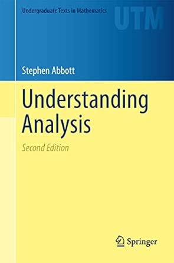
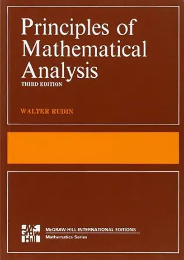
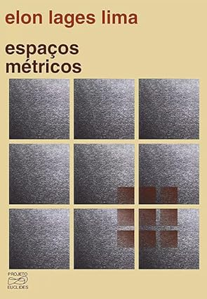
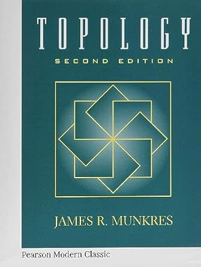
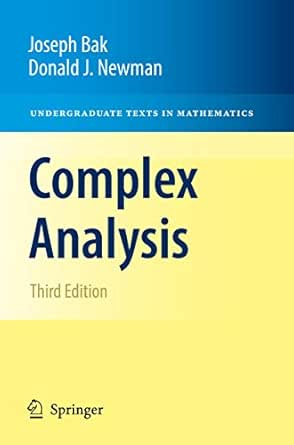
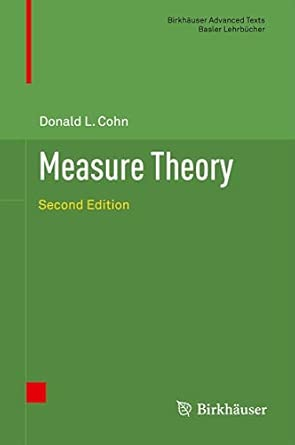
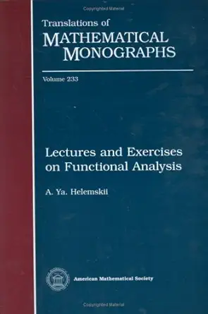

01
Básica · Graduação · Completa
Pré-Cálculo
Nivelamento e base para o que vem
📚 2 livros: 1 principal + 1 complementar
O objetivo é passar por aqui o mais rápido possível, sem pular etapas. Quem trava no Cálculo quase sempre trava antes: manipulação algébrica, funções elementares, trigonometria. Use o Iezzi como consulta, identificando os pontos de defasagem e indo direto neles.
Como estudarNão leia o Iezzi do início ao fim. Faça uma varredura honesta do que não domina e trabalhe especificamente esses tópicos. O Elon é opcional mas recomendado para quem quer uma transição mais suave para a linguagem matemática formal.
Livros

Matemática — Volume ÚnicoPrincipal
Gelson Iezzi et al.
Referência completa do ensino médio brasileiro, muito utilizado por vestibulandos. Use como consulta e nivelamento, não como leitura linear.

A Matemática do Ensino Médio (3 vols.)Complementar
Elon Lages Lima
Voltado para aperfeiçoamento de professores, cobre o mesmo conteúdo do Iezzi com rigor e linguagem matemática de verdade. Não se prenda demais a ele. Use como transição para o pensamento formal.
O que absorver
- Operações algébricas e fatoração
- Funções e seus gráficos
- Funções exponencial, logarítmica e trigonométricas
- Equações e inequações
- Geometria analítica básica
Mínimo para avançar:os tópicos acima, usando o Iezzi como guia nos pontos de defasagem
Pronto para avançar quando:
- Manipula expressões algébricas e funções sem hesitar
- Conhece o comportamento das funções elementares e seus gráficos
- Resolve equações e inequações sem precisar consultar receitas
02
Básica · Graduação · Completa
Lógica e Demonstrações
Aprender a pensar e a escrever matematicamente
📚 2 livros: 1 principal + 1 complementar
Uma das fases mais importantes do roadmap inteiro. Matemática não é cálculo. É rigor lógico e demonstração. Aqui você aprende a linguagem: quantificadores, implicação, negação, indução, contradição, contrapositiva. Sem isso, simplesmente não se avança.
Como estudarO Cordeiro deve ser lido com papel e lápis. Tente escrever cada demonstração antes de ver a solução, mesmo que fique travado por horas. Esse travamento é parte da formação. O Velleman é complementar: faça-o se quiser uma base verdadeiramente sólida para encarar as demais fases.
Livros

Um Convite à MatemáticaPrincipal
Marcelo Cordeiro e Daniel Tyszler
O livro central desta fase. Ensina a linguagem da matemática: lógica, quantificadores e as principais técnicas de demonstração. Acessível, bem escrito e diretamente útil para o que vem a seguir.

How to Prove ItComplementar
Daniel J. Velleman
Abordagem mais formal e sistemática. Faça-o se quiser uma base verdadeiramente sólida, especialmente quem pretende ir além da Trilha Básica.
O que absorver
- Lógica proposicional e quantificadores
- Implicação, negação, contrapositiva
- Demonstração por indução
- Demonstração por contradição
- Conjuntos, funções, relações
Mínimo para avançar:os tópicos acima dominados: consegue escrever demonstrações completas
Pronto para avançar quando:
- Entende o que significa provar algo
- Consegue escrever uma demonstração por indução, contradição ou contrapositiva sem consultar modelo
- Sabe a diferença entre ∀ e ∃ e como negar cada um
03
Básica · Graduação · Completa
Teoria Elementar dos Números
Divisibilidade, congruências e primeiros argumentos aritméticos
📚 2 livros: 1 principal + 1 complementar
Fase 2 (Lógica e Demonstrações)
Uma primeira fase de teoria dos números é excelente para treinar demonstrações em um contexto concreto. Divisibilidade, congruências, primos, algoritmo de Euclides e aritmética modular oferecem problemas acessíveis, mas matematicamente ricos. Esta fase prepara o leitor para álgebra abstrata, teoria dos corpos, Galois e a teoria dos números mais avançada da graduação.
Como estudarUse Burton como livro-base. Esta fase é menos sobre acumular resultados sofisticados e mais sobre aprender a provar: trabalhar com divisibilidade, congruências, indução, contradição e exemplos. Jones & Jones entra como complemento para reforçar exercícios e oferecer outra organização do mesmo material. Não é necessário estudar tópicos avançados de teoria dos números nesta etapa.
Livros

Elementary Number TheoryPrincipal
David M. Burton
Texto principal para a primeira entrada em teoria dos números. É direto, acessível e adequado para self-study, com muitos exercícios. O foco deve ser divisibilidade, algoritmo de Euclides, congruências, teorema chinês dos restos, funções aritméticas elementares e primeiros resultados sobre primos.

Elementary Number TheoryComplementar
Gareth A. Jones and J. Mary Jones
Complemento estrangeiro claro e bem organizado, útil para ver a mesma aritmética elementar por outro ângulo. Funciona especialmente bem como apoio para exercícios, exemplos e consolidação da linguagem de congruências.
O que absorver
- Divisibilidade, algoritmo de Euclides e máximo divisor comum
- Números primos e fatoração única
- Congruências e aritmética modular
- Teorema chinês dos restos em exemplos simples
- Pequeno teorema de Fermat e teorema de Euler
- Funções aritméticas elementares em nível inicial
- Primeiros problemas diofantinos simples
Mínimo para avançardominar divisibilidade, congruências, algoritmo de Euclides, fatoração única e os primeiros teoremas aritméticos, resolvendo exercícios simples sem depender de soluções prontas
Pronto para avançar quando:
- Consegue provar resultados básicos sobre divisibilidade e máximo divisor comum
- Resolve congruências lineares e problemas simples de aritmética modular
- Entende e aplica o teorema chinês dos restos em exemplos concretos
- Consegue usar Fermat/Euler em problemas elementares
- Está mais confortável escrevendo demonstrações curtas e precisas
04
Básica · Graduação · Completa
Cálculo I
Limites, derivadas, integral e séries
📚 2 livros: 1 principal + 1 complementar
Fases 1 e 2 (Pré-Cálculo; Lógica e Demonstrações)
O coração do Cálculo é o limite. Esta fase não usa livros fáceis como o Stewart (simples demais para este roadmap) ou o Guidorizzi (desmotivado). Optei por esses livros pois eles trazem a definição de convergência de uma sequência, e entender este conceito vai ajudar muito na definição de limite. O Caminha é o texto principal; o Táboas entra como complementar para reforçar e ampliar.
Como estudarPara cada teorema, tente entender por que a hipótese é necessária antes de ver a demonstração. Use o Táboas nos tópicos em que o Caminha for mais enxuto. Os dois se complementam bem. Não avance sem entender sequências e séries: reaparece em Análise.
Livros

Fundamentos de CálculoPrincipal
Antônio Caminha
Rigoroso, moderno e com exercícios resolvidos. Cobre limite, continuidade, derivada, integral e sequências/séries com honestidade matemática. Um dos melhores pontos de entrada para o Cálculo sério em língua portuguesa.

Cálculo em Uma Variável RealComplementar
Plácido Táboas (ICMC-USP)
Mais completo em alguns pontos, com boa cobertura de sequências e séries. Use em paralelo: quando travar num tema no Caminha, veja como o Táboas o aborda.
O que absorver
- Definição de convergência de uma sequência
- Definição de limite e continuidade
- Derivadas e regras de derivação
- Teorema do Valor Médio e aplicações
- Integral de Riemann e Teorema Fundamental do Cálculo
- Sequências e séries: convergência, critérios
Mínimo para avançar:os tópicos acima, usando o Caminha como livro-base
Pronto para avançar quando:
- Sabe provar limites pela definição
- Entende por que uma função contínua num intervalo fechado atinge máximo e mínimo
- Sabe enunciar e aplicar os três principais teoremas do Cálculo I
05
Básica · Graduação · Completa
Álgebra Linear Elementar
Pode ser estudada em paralelo com o Cálculo I
📚 2 livros: 1 principal + 1 complementar
Fases 1 e 2 (Pré-Cálculo; Lógica e Demonstrações)
Independente do Cálculo, pode rodar em paralelo. Este primeiro contato serve como preparação para a Álgebra Linear da Trilha Graduação, quando o assunto é tratado com a profundidade que merece.
Como estudarA cada novo conceito, pergunte o que ele significa geometricamente. A intuição geométrica é tão importante quanto o formalismo nesta fase.
Livros

Álgebra Linear no ℝⁿ e Geometria Analítica VetorialPrincipal
Plácido Andrade (SBM)
Excelente primeira abordagem para com rigor. Cobre espaços vetoriais, transformações lineares e geometria analítica vetorial de forma integrada, sem abrir mão da precisão matemática. Publicação da SBM, bem calibrada para quem está começando.

Geometria Analítica e Álgebra LinearComplementar
Elon Lages Lima
Perspectiva mais geométrica. Leia uma coisa ou outra e priorize o principal. Os dois juntos podem ser redundantes para este nível.
O que absorver
- Sistemas lineares e escalonamento
- Espaços vetoriais, subespaços, base e dimensão
- Transformações lineares e matrizes
- Determinantes
- Autovalores, autovetores e diagonalização
- Produto interno e ortogonalidade
Mínimo para avançar:os tópicos acima, usando o Plácido Andrade como base de estudo
Pronto para avançar quando:
- Entende o que é um espaço vetorial e sabe verificar os axiomas
- Consegue trabalhar com base, dimensão e transformações lineares
- Calcula autovalores e entende o que eles significam geometricamente
06
Básica · Graduação · Completa
Cálculo a Várias Variáveis
Funções de ℝⁿ e os teoremas integrais clássicos
📚 3 livros: 2 principais + 1 complementar
Fase 4 (Cálculo I)
Estende o Cálculo para funções de várias variáveis, culminando nos teoremas de Green, Stokes e Gauss, que serão unificados e generalizados na Análise em Várias Variáveis mais à frente.
Como estudarAlterne entre o Lang e o Diomara, pois são complementares. O Marsden & Tromba entra como leitura pontual quando quiser mais profundidade. Não economize tempo desenhando: visualizar campos vetoriais e superfícies é metade do aprendizado, e realmente faz a diferença nos problemas.
Livros

Calculus of Several VariablesPrincipal
Serge Lang
Direto, rigoroso e sem enrolação. Cobre derivadas parciais, gradiente, multiplicadores de Lagrange, integrais múltiplas e os teoremas clássicos com precisão e elegância.

Cálculo Diferencial e Integral de Funções de Várias VariáveisPrincipal
Diomara Pinto e Regina Noguchi
Complementar ao Lang, com mais exemplos e exercícios. Alterne entre os dois: o que um economiza em detalhe o outro supre.

Vector CalculusComplementar
Marsden e Tromba
Leia uma coisa ou outra e priorize os outros dois. Útil como terceira perspectiva pontual, especialmente nos teoremas integrais.
O que absorver
- Derivadas parciais, gradiente e jacobiano
- Regra da cadeia em várias variáveis
- Extremos locais e multiplicadores de Lagrange
- Integrais múltiplas e mudança de variáveis
- Teoremas de Green, Stokes e Gauss
- Campos vetoriais e campos conservativos
Mínimo para avançar:os tópicos acima, com domínio conceitual de diferenciabilidade total vs derivadas parciais, interpretação do jacobiano como diferencial e compreensão das hipóteses dos teoremas de Green, Gauss e Stokes
Pronto para avançar quando:
- Distingue claramente derivadas parciais, direcionais e diferenciabilidade total (com exemplos e contraexemplos)
- Interpreta o jacobiano como aplicação linear e aproximação local, não apenas como matriz de cálculo
- Sabe quando e por que aplicar Green, Gauss ou Stokes, entendendo suas hipóteses
07
Básica · Graduação · Completa
Análise na Reta
Ponto de saída da Trilha Básica
📚 4 livros: 3 principais + 1 avançado
Fase 4 (Cálculo I)
Esta é a fase mais transformadora do roadmap. A Análise na Reta dá estrutura e rigor ao que foi feito no Cálculo. Não corra aqui. É a culminação de todo o estudo anterior. Quem fizer bem esta fase e decidir parar já terá uma base matemática muito acima da média.
Como estudarEscolha um dos três livros principais e siga-o com seriedade. O Zahn e o Abbott são as melhores portas de entrada para self study. O Elon é o clássico absoluto em português: use como complemento, ou como principal se preferir a concisão e a elegância. O Baby Rudin só deve ser encarado se os outros três já parecerem fáceis: é mais exigente, introduz espaços métricos desde cedo e não economiza no rigor. Se decidir lê-lo, vá até o capítulo 8.
Livros

Análise RealPrincipal
Maurício Zahn
Excelente porta de entrada para Análise Real. Mais amigável que o Elon em vários pontos, sem perder rigor. Ótimo para quem estuda sozinho.

Curso de Análise — Vol. 1Principal
Elon Lages Lima
O clássico absoluto de Análise na Reta em português. Cobre números reais, topologia da reta, limites, continuidade, derivadas e integral de Riemann com elegância e clareza difíceis de superar.

Understanding AnalysisPrincipal
Stephen Abbott
Um dos melhores livros de entrada em Análise em inglês. Claro, motivador e bem organizado, com excelente equilíbrio entre intuição e rigor. Especialmente forte para quem estuda sozinho.

Principles of Mathematical AnalysisAvançado
Walter Rudin
Denso, sem concessões, muito bem escrito. É o livro de Análise Matemática mais famoso do mundo. Porém, só encare-o se os outros três já parecerem fáceis. Se for lê-lo, vá até o capítulo 8.
O que absorver
- Construção dos números reais e completude
- Topologia da reta: abertos, fechados, compactos
- Definição ε-δ de limite e continuidade
- Teorema do Valor Intermediário e Heine-Cantor
- Diferenciabilidade e Teorema do Valor Médio
- Integral de Riemann: definição e propriedades
- Convergência pontual e uniforme de séries de funções
Mínimo para avançar:os tópicos acima com rigor real: não basta calcular, é preciso demonstrar
Ponto de saída da Trilha Básica. Pronto quando:
- Prova o Teorema do Valor Intermediário e Bolzano-Weierstrass a partir das definições
- Entende completude dos reais e por que ela importa
- Distingue convergência pontual e uniforme de sequências de funções
Ao concluir a Trilha Básica
- Parabéns: você já terá construído uma base muito acima da média em linguagem matemática, aritmética elementar, cálculo e análise inicial.
- Esse é um ponto de chegada legítimo para entusiastas sérios, professores, programadores e leitores curiosos.
- Se quiser seguir para a Trilha Graduação, o próximo passo é consolidar Álgebra Linear, Álgebra Abstrata, Topologia e as primeiras estruturas mais formais da matemática.
↑ Voltar ao mapa das fases
08
Graduação · Completa
Álgebra Linear
Uma das disciplinas mais importantes de todo o roadmap
📚 3 livros: 1 principal + 2 complementares
Fase 5 (Álgebra Linear Elementar)
O primeiro contato na Fase 4 serviu como preparação. Aqui o assunto é tratado com a profundidade que merece. Álgebra Linear é o alicerce de praticamente toda a matemática: sem ela não se avança em Análise, Geometria ou Topologia. Não a negligencie!
Como estudarOs três livros se complementam. O Coelho é o texto principal: muito bem escrito, rigoroso e bem estruturado. O Hoffman & Kunze é o clássico absoluto que todo matemático consulta; Assim como o Baby Rudin em Análise, é provavelmente o livro de Álgebra Linear mais famoso do mundo. O Axler é uma alternativa elegante com abordagem sem determinantes no início. Leitura séria de pelo menos dois dos três é o ideal.
Livros

Um Curso de Álgebra LinearPrincipal
Flávio Ulhoa Coelho e Mary Lilian Lourenço
Melhor opção nacional para este nível. Rigoroso e bem escrito, cobre espaços vetoriais, transformações lineares, autovalores, formas canônicas e produto interno com a profundidade que a fase exige.

Linear AlgebraReferência
Hoffman e Kunze
O clássico. Rigoroso e completo: cobre espaços sobre corpos gerais, forma de Jordan, módulos e formas multilineares. Exigente, mas quem o lê sai em melhor forma.

Linear Algebra Done RightComplementarGrátis ↗
Sheldon Axler
Abordagem sem determinantes no início, com foco total em transformações lineares e sua estrutura intrínseca. Desenvolve muito bem a intuição sobre operadores. É muito útil como fonte de questões. Disponível gratuitamente no site do autor.
O que absorver
- Espaços vetoriais sobre corpos gerais
- Operadores lineares e sua estrutura
- Polinômio mínimo e polinômio característico
- Forma canônica de Jordan
- Formas bilineares e o teorema espectral
- Espaços com produto interno sobre ℂ
Mínimo para avançar:os tópicos acima pelo Coelho. Hoffman & Kunze é aprofundamento, não pré-requisito estrito
Pronto para avançar quando:
- Trabalha com espaços vetoriais sobre corpos gerais com segurança
- Entende a forma canônica de Jordan e sabe construí-la
- Domina formas bilineares e o teorema espectral
09
Graduação · Completa
Álgebra I
Grupos, anéis e corpos
📚 2 livros
Fase 5 (Álgebra Linear Elementar)
Primeiro contato sério com as estruturas algébricas fundamentais. O objetivo são os capítulos 0–19 do Gallian ou 1–26 do Pinter. A chance de se interessar verdadeiramente por álgebra após estes tópicos é altíssima.
Como estudarEscolha um dos dois e consulte a parte equivalente no outro. Trabalhe sempre com exemplos concretos: grupos de simetria, inteiros módulo n, polinômios sobre ℚ. Todo teorema abstrato deve ser verificado em dois ou três exemplos antes de ser considerado entendido.
Livros

Contemporary Abstract AlgebraPrincipal
Joseph Gallian
Acessível, com muitos exemplos e contexto histórico. Faz o assunto parecer natural e motivado, não apenas abstrato e axiomático.

A Book of Abstract AlgebraPrincipal
Charles C. Pinter
Escrito com clareza excepcional e excelentes exercícios. Consulte a parte equivalente ao que estiver estudando no Gallian.
O que absorver
- Grupos, subgrupos, grupos cíclicos
- Homomorfismos e teoremas de isomorfismo
- Grupos quociente e teorema de Lagrange
- Anéis, ideais e anéis quociente
- Domínios de integridade e corpos
- Polinômios e extensões de corpos (introdução)
Mínimo para avançar:os tópicos acima. Caps. 0–19 do Gallian ou 1–26 do Pinter cobrem o essencial
Pronto para avançar quando:
- Prova o Teorema de Lagrange e entende suas consequências
- Sabe o que é homomorfismo e prova o Primeiro Teorema do Isomorfismo
- Entende grupos quociente e anéis quociente
10
Graduação · Completa
Teoria dos Números
Pode ser estudada em paralelo com a Álgebra I
📚 3 livros: 2 principais + 1 complementar
Fase 3 (Teoria Elementar dos Números)
Esta fase retoma a teoria dos números em nível de graduação, agora com mais maturidade matemática. O objetivo é aprofundar congruências, funções aritméticas, somatórios, reciprocidade quadrática, primeiros métodos analíticos e conexões com álgebra. Apostol serve como entrada principal, mais acessível e analítica; Ireland & Rosen funciona como rota principal robusta para quem quiser ir mais fundo na direção algébrica; e Um Passeio com Primos amplia a cultura matemática com problemas desafiadores e tópicos especiais.
Como estudarComece por Apostol, sem obrigação de leitura integral. O núcleo da fase está em funções aritméticas, congruências, somatórios, produtos, estimativas elementares e primeiros métodos analíticos. Use Ireland & Rosen como rota principal robusta caso você se interesse seriamente por teoria dos números, especialmente pela direção algébrica: corpos finitos, reciprocidade, somas de Gauss, zeta, funções L e teoria algébrica dos números. Um Passeio com Primos funciona como complemento brasileiro mais desafiador, ótimo para problemas, seminários e cultura matemática. Esta fase pode ser estudada em paralelo com Álgebra I.
Livros

Introduction to Analytic Number TheoryPrincipal
Tom M. Apostol
Livro principal da fase para a rota mais acessível e analítica. Apesar do nome intimidador, é perfeitamente fazível com noções de teoria elementar dos números e um pouco de análise. Serve como ponte natural entre aritmética elementar, funções aritméticas, somatórios, produtos, séries de Dirichlet e primeiros métodos analíticos. Não precisa ser lido inteiro: use-o como eixo para consolidar a linguagem analítica da teoria dos números.

A Classical Introduction to Modern Number TheoryPrincipal
Kenneth Ireland e Michael Rosen
Livro principal robusto para quem realmente se interessar por teoria dos números. É mais algébrico e direcional, conduzindo da teoria elementar para corpos finitos, reciprocidade quadrática e superior, somas de Gauss e Jacobi, funções zeta e L, teoria algébrica dos números, corpos ciclotômicos, equações diofantinas e curvas elípticas. Não precisa ser lido inteiro numa primeira passagem: use-o como rota de aprofundamento algébrico.

Um Passeio com Primos e Outros Números Familiares pelo Mundo InteiroComplementar
Carlos Gustavo Tamm de Araújo Moreira, Nicolau Corção Saldanha e Eduardo Tengan
Complemento brasileiro amplo, desafiador e culturalmente muito rico. A primeira parte cobre o programa tradicional de teoria elementar dos números; a segunda abre para tópicos independentes como primalidade, AKS, Lucas–Lehmer, inteiros algébricos, curvas elípticas e uma ponte com o Teorema dos Números Primos. É excelente para problemas mais difíceis, seminários, olimpíadas universitárias e conexões com análise, álgebra e geometria.
O que absorver
- Funções aritméticas e operações como convolução de Dirichlet
- Congruências em nível mais maduro
- Somatórios aritméticos, produtos e estimativas elementares
- Reciprocidade quadrática e símbolos de Legendre/Jacobi em nível introdutório
- Raízes primitivas e estrutura multiplicativa módulo n, se o texto escolhido avançar até lá
- Primeiras conexões com anéis, corpos finitos e extensões
- Primeira intuição sobre séries de Dirichlet, funções zeta ou distribuição dos primos, sem exigir domínio avançado
Mínimo para avançarentender funções aritméticas, congruências avançadas, reciprocidade quadrática em nível introdutório, somatórios aritméticos básicos e a ponte inicial entre teoria dos números, análise e álgebra abstrata
Pronto para avançar quando:
- Consegue trabalhar com funções aritméticas e convolução de Dirichlet em exemplos básicos
- Entende congruências de forma mais estrutural e reconhece a importância da reciprocidade quadrática
- Consegue acompanhar argumentos com somatórios, produtos e estimativas elementares
- Reconhece a interação entre teoria dos números, análise, grupos, anéis e corpos finitos
- Está preparado para ver Galois, álgebra comutativa, teoria algébrica dos números e geometria algébrica com mais maturidade aritmética
11
Graduação · Completa
Análise em Várias Variáveis
Formalização rigorosa do Cálculo a várias variáveis
📚 4 livros: 2 principais + 2 complementares
Fases 5, 6 e 7 (Álgebra Linear Elementar; Cálculo a Várias Variáveis; Análise na Reta)
Aqui a derivada é uma transformação linear. O resultado central é o Teorema Geral de Stokes, que unifica Green, Gauss e Stokes-Kelvin num resultado só. Pré-requisito direto para a Geometria Diferencial.
Como estudarO Cipolatti é uma boa opção para quem quer uma abordagem mais direta, mas não cobre formas diferenciais nem o Teorema de Stokes geral, optando pela forma geral do Teorema da Divergência (que também pode ser visto como consequência de Stokes geal). Nesse caso, complemente com o Munkres nesses tópicos. Quem quiser a abordagem completa desde o início use o Munkres como principal. O Mikusinski & Taylor é auto-contido e já fornece uma introdução simplificada à integral de Lebesgue, antecipando conceitos das fases seguintes.
Livros

Cálculo AvançadoPrincipal (opção direta)
Rolci Cipolatti (SBM)
Uma jóia nacional. Aborda diferenciabilidade em espaços normados com clareza e bom nível de generalidade. Não cobre formas diferenciais nem o Teorema de Stokes geral: complemente com o Munkres nesses tópicos.

Análise no RⁿComplementar gratuitoGrátis ↗
Roberto I. Oliveira
Notas de curso em português para Análise no Rⁿ, com abordagem rigorosa de cálculo em espaços normados, próximas em espírito ao Cipolatti. Funcionam como complemento natural para reforçar limites, continuidade, diferenciabilidade, derivada de Fréchet, aplicações entre espaços normados, teoremas da função inversa e implícita, subvariedades e integração multidimensional.

Analysis on ManifoldsPrincipal (abordagem completa)
James R. Munkres
Um clássico na área. Cobre diferenciabilidade em ℝⁿ, o teorema da função implícita, integração em variedades e o Teorema de Stokes geral com a clareza característica de Munkres.

An Introduction to Multivariable AnalysisComplementar
Piotr Mikusiński e Michael D. Taylor
Auto-contido e bem calibrado para self study. Já inclui uma introdução simplificada à integral de Lebesgue, antecipando conceitos das fases seguintes.
O que absorver
- Derivada como transformação linear: diferencial
- Teorema da função implícita e da função inversa
- Variedades no caso euclidiano
- Formas diferenciais elementares
- Integração em variedades e Teorema Geral de Stokes
Mínimo para avançar:os tópicos acima. Cipolatti + caps. de formas e Stokes do Munkres, ou Munkres completo
Pronto para avançar quando:
- Entende a derivada como transformação linear
- Enuncia e aplica o Teorema da Função Implícita
- Entende o Teorema Geral de Stokes como resultado unificador
12
Graduação · Completa
Topologia
Espaços métricos e topologia geral
📚 3 livros: 2 principais + 1 referência
Fase 7 (Análise na Reta)
O framework que unifica e generaliza os conceitos de vizinhança, continuidade e convergência que apareceram em Análise na Reta. Pré-requisito para quase tudo nas fases avançadas.
Como estudarO ideal é começar pelo Elon antes do Munkres, pois a transição de espaços métricos para espaços topológicos gerais fica mais natural assim, embora isso não seja obrigatório. O Munkres é o livro mais completo e bem escrito para Topologia Geral. O Willard é uma referência para consulta, não para leitura linear.
Livros

Espaços MétricosEntrada
Elon Lages Lima
Texto rigoroso em português. Apresenta a estrutura de espaço métrico com cuidado: convergência, completude, compacidade, continuidade. Faz a transição natural para a topologia geral. Leitura obrigatória antes do Munkres.

TopologyPrincipal
James R. Munkres
Referência mundial de Topologia Geral. Um dos melhores livros de matemática do século XX. Cada capítulo é um modelo de como expor matemática com clareza sem sacrificar rigor. Não tenha pressa com ele.

General TopologyReferência
Stephen Willard
Mais completo que o Munkres, com mais resultados e contra-exemplos. Use como referência após o Munkres.
O que absorver
- Espaços métricos: convergência, completude, compacidade
- Definição axiomática de espaço topológico
- Bases, subespaços e topologia produto
- Continuidade, homeomorfismos
- Compacidade e teorema de Tychonoff
- Conexidade e conexidade por caminhos
- Espaços de separação: Hausdorff, normal
Mínimo para avançar:os tópicos acima. Elon cobre espaços métricos; Munkres parte I cobre topologia geral
Pronto para avançar quando:
- Trabalha com a definição axiomática de espaço topológico
- Entende compacidade e por que ela importa
- Distingue conexidade de conexidade por caminhos
13
Graduação · Completa
Variável Complexa
Uma das áreas mais elegantes de toda a matemática
📚 4 livros: 1 principal + 2 complementares + 1 visual
Fases 6 e 7 (Cálculo a Várias Variáveis; Análise na Reta)
Funções diferenciáveis sobre os complexos têm propriedades surpreendentemente rígidas: diferenciável uma vez implica diferenciável infinitas vezes e analítica. O Teorema de Cauchy e a teoria de resíduos têm alcance muito maior do que parecem à primeira vista. Escolha o Soares como principal e complemente com o Bak ou o Palka.
Como estudarAs condições de Cauchy-Riemann dizem que a função preserva ângulos: é uma transformação conforme. Tente sempre visualizar o que uma função complexa faz geometricamente. O Needham é o melhor livro existente para isso: use em paralelo para construir intuição visual.
Livros

Cálculo em Uma Variável ComplexaPrincipal
Márcio G. Soares
Excelente entrada nacional. Acessível, bem motivado, cobre Cauchy-Riemann, integração complexa, Teorema de Cauchy e resíduos com clareza.

Complex AnalysisComplementar
Bak e Newman
Equivalente ao Soares em nível e cobertura. Consulte quando quiser uma segunda exposição dos mesmos temas.

An Introduction to Complex Function TheoryComplementar
Bruce P. Palka
Texto bem estruturado e com bom nível de detalhe. Cobre análise complexa introdutória de forma mais extensa que o Bak & Newman, sendo boa opção para quem quer aprofundar tópicos específicos como integração no plano complexo e séries de Laurent.

Visual Complex AnalysisVisual / Paralelo
Tristan Needham
O melhor livro existente para intuição geométrica em Análise Complexa. Leitura paralela, não substitui os anteriores.
O que absorver
- Funções analíticas e condições de Cauchy-Riemann
- Integral de linha no plano complexo
- Teorema de Cauchy e fórmula integral
- Séries de Taylor e Laurent
- Singularidades e classificação
- Teorema dos resíduos e aplicações
Mínimo para avançar:os tópicos acima, usando o Soares como referência central
Pronto para avançar quando:
- Entende as condições de Cauchy-Riemann e sua interpretação geométrica
- Aplica o Teorema de Cauchy e calcula integrais pelo Teorema dos Resíduos
- Expande em série de Laurent e classifica singularidades
14
Graduação · Completa
Geometria Diferencial de Curvas e Superfícies
A geometria local antes das variedades
📚 4 livros: 1 principal + 2 complementares + 1 referência
Fases 5 e 6 (Álgebra Linear Elementar; Cálculo a Várias Variáveis)
Primeiro contato sistemático com geometria diferencial clássica. O objetivo é estudar curvas e superfícies no espaço euclidiano antes de entrar na linguagem abstrata das variedades. Esta fase constrói intuição geométrica para curvatura, formas fundamentais, geodésicas e aplicações como a aplicação de Gauss.
Como estudarUse Shifrin como caminho principal: é mais curto, direto e contém o necessário para atravessar a fase com bom suporte ao autodidata. Em seguida, use Pressley para consolidar a intuição e reforçar os exercícios. O'Neill é amigável, mas maior, então funciona melhor como aprofundamento seletivo. O do Carmo é a referência clássica: excelente, mas mais difícil para self-study, ideal para consulta ou segunda leitura.
Livros

Differential Geometry: A First Course in Curves and SurfacesPrincipal gratuitoGrátis ↗
Theodore Shifrin
Melhor ponto de partida para esta fase: notas curtas, diretas e muito adequadas para self-study. Contêm o essencial de curvas e superfícies, com exemplos, exercícios e exercícios resolvidos, o que dá bastante suporte ao autodidata. Use como ponto de partida da fase.

Elementary Differential GeometryComplementar
Andrew Pressley
Excelente segundo texto para consolidar a fase. É claro, organizado e também adequado para self-study, com boa progressão e exercícios resolvidos. Funciona muito bem para reforçar a intuição geométrica construída a partir do Shifrin.

Elementary Differential GeometryComplementar
Barrett O'Neill
Livro amigável e bastante rico, mas maior e mais abrangente. Entra como leitura complementar para quem deseja avançar com mais calma e começar a enxergar a ponte entre a geometria clássica de curvas e superfícies e a geometria Riemanniana.

Differential Geometry of Curves and SurfacesReferência clássica
Manfredo P. do Carmo
Clássico absoluto em curvas e superfícies, mas mais difícil para estudo autodidata numa primeira passagem. Use como referência, segunda leitura ou consulta para aprofundar pontos específicos depois de ganhar base com Shifrin e Pressley.
O que absorver
- Curvas parametrizadas, comprimento de arco e triedro de Frenet
- Superfícies regulares e parametrizações locais
- Primeira e segunda formas fundamentais
- Curvaturas normal, média e gaussiana
- Aplicação de Gauss
- Geodésicas em superfícies
- Theorema Egregium em nível introdutório
Mínimo para avançarentender curvas, superfícies, formas fundamentais e curvatura gaussiana usando Shifrin como livro-base
Pronto para avançar quando:
- Consegue calcular curvaturas de curvas e superfícies a partir das definições
- Entende a primeira e segunda formas fundamentais e o que elas medem
- Sabe enunciar e interpretar o Theorema Egregium
15
Graduação · Completa
Equações Diferenciais Ordinárias
📚 3 livros: 1 principal + 2 complementares
Fases 5 e 6 (Álgebra Linear Elementar; Cálculo a Várias Variáveis)
EDOs modelam praticamente todos os fenômenos dinâmicos da física, biologia e engenharia. A perspectiva qualitativa (plano de fase, equilíbrios, estabilidade) é tão importante quanto os métodos de solução explícita.
Como estudarUse o Kreider como livro-base para a primeira passagem: métodos elementares, equações lineares, sistemas lineares e introdução à análise qualitativa. O Djairo funciona bem como apoio em português, especialmente para aplicações e interpretação das soluções. O Doering–Lopes é mais rigoroso e pode ser usado seletivamente para aprofundar existência, unicidade e a ponte com sistemas dinâmicos. Análise na Reta ajuda a entender melhor existência, unicidade e limites de aproximações, mas não precisa ser tratada como pré-requisito formal para esta primeira passagem.
Livros

Elementary Differential EquationsPrincipal
Kreider et al.
Um clássico. Bem estruturado para uma primeira abordagem rigorosa. Cobre os principais tipos de equações, sistemas lineares e introdução à análise qualitativa.

Equações Diferenciais AplicadasComplementar
Djairo Guedes de Figueiredo e Aloísio Freiria Neves
Alternativa nacional sólida para uma primeira passagem por Equações Diferenciais Ordinárias. O texto desenvolve métodos elementares, teoria básica, aplicações e interpretação qualitativa das soluções, funcionando muito bem como apoio ao Kreider. É especialmente útil para quem prefere uma referência em português antes de avançar para um tratamento mais estrutural.

Equações Diferenciais OrdináriasComplementar
Claus Ivo Doering e Artur Oscar Lopes
Referência nacional sólida. Bom complemento ao Kreider, mais rigoroso e próximo da teoria de sistemas dinâmicos.
O que absorver
- EDOs de primeira ordem: separáveis, lineares, exatas
- EDOs lineares de ordem superior
- Teorema de existência e unicidade (Picard-Lindelöf)
- Sistemas lineares de EDOs e método dos autovalores
- Análise qualitativa: plano de fase, equilíbrios, estabilidade
Mínimo para avançar:os tópicos acima, usando o Kreider como eixo principal
Pronto para avançar quando:
- Enuncia e aplica o Teorema de Existência e Unicidade de Picard-Lindelöf
- Resolve sistemas lineares de EDOs usando autovalores
- Analisa estabilidade de equilíbrios pelo plano de fase
16
Graduação · Completa
Análise de Fourier e EDP Elementar
Séries de Fourier, transformada de Fourier e equações clássicas
📚 4 livros: 1 principal + 3 complementares
Fases 7 e 15 (Análise na Reta; Equações Diferenciais Ordinárias)
Esta fase introduz duas ferramentas centrais da análise matemática: a decomposição de funções em frequências e o estudo elementar das equações diferenciais parciais clássicas. Séries de Fourier, transformada de Fourier, convolução, separação de variáveis e problemas de contorno aparecem aqui como uma ponte natural entre cálculo avançado, análise, EDO, física matemática e análise funcional. A fase pressupõe a bagagem acumulada até EDO, especialmente cálculo a várias variáveis, análise na reta, álgebra linear elementar e técnicas básicas de equações diferenciais. A intenção não é ainda entrar em EDP avançada, espaços de Sobolev ou teoria de distribuições, mas construir a intuição analítica e computacional necessária para esses temas.
Como estudarUse Djairo como livro-base da fase. A primeira passagem deve priorizar séries de Fourier, transformada de Fourier, convolução, separação de variáveis e as equações do calor, da onda e de Laplace. Stein & Shakarchi e Folland entram como complementos para aprofundar a parte de Fourier; Valéria Iório oferece uma boa rota complementar em português para EDP de graduação. Não tente transformar esta fase em Evans, Sobolev ou distribuições: isso fica para EDP Avançada.
Livros

Análise de Fourier e Equações Diferenciais ParciaisPrincipal
Djairo Guedes de Figueiredo
Livro principal da fase. É uma entrada natural, em português, para séries de Fourier, transformada de Fourier e equações diferenciais parciais clássicas. Use como livro-base para organizar a primeira passagem pela fase, especialmente nos tópicos de Fourier, separação de variáveis, equação do calor, equação da onda e equação de Laplace.

Fourier Analysis: An IntroductionComplementar
Elias M. Stein and Rami Shakarchi
Complemento forte para a parte de análise de Fourier. Apresenta séries de Fourier, transformada de Fourier, convolução e ideias centrais da análise harmônica em nível acessível, mas matematicamente sério. Use para aprofundar a linguagem de frequências, convergência, transformadas e aplicações iniciais.

Fourier Analysis and Its ApplicationsComplementar
Gerald B. Folland
Complemento elegante para reforçar a parte de Fourier com uma abordagem clara e conceitual. Útil para consolidar transformada de Fourier, convolução e aplicações, sem exigir ainda a profundidade de uma fase avançada de análise harmônica.

EDP: Um Curso de GraduaçãoComplementar
Valéria Iório
Complemento em português para a parte de equações diferenciais parciais em nível de graduação. Útil para estudar as equações clássicas com uma linguagem próxima da tradição matemática brasileira, reforçando exemplos, problemas de contorno e métodos elementares.
O que absorver
- Séries trigonométricas e séries de Fourier
- Coeficientes de Fourier e interpretação em frequências
- Convergência de séries de Fourier em nível inicial
- Identidade de Parseval e ideia de ortogonalidade em espaços de funções
- Transformada de Fourier em nível introdutório
- Convolução e propriedades básicas
- Separação de variáveis
- Equação do calor
- Equação da onda
- Equação de Laplace e problemas de contorno simples
Mínimo para avançar:entender séries de Fourier, transformada de Fourier em nível básico, convolução, separação de variáveis e as ideias centrais das equações do calor, da onda e de Laplace em problemas simples
Pronto para avançar quando:
- Consegue calcular coeficientes de Fourier em exemplos básicos
- Entende a interpretação de uma função em termos de frequências
- Reconhece o papel da ortogonalidade em séries de Fourier
- Consegue usar separação de variáveis em problemas clássicos simples
- Entende a diferença entre as equações do calor, da onda e de Laplace
- Está preparado para ver análise funcional, operadores, teoria espectral e EDP avançada com mais intuição analítica
17
Graduação · Completa
Análise em Espaços Métricos
A ponte entre análise real, topologia e análise funcional
📚 4 livros: 1 principal + 3 complementares
Fase 11 (Análise em Várias Variáveis)
Estudo de espaços métricos com aplicações de interesse da Análise. Esta fase forma o substrato necessário para Medida e Integração, Análise Funcional e Topologia avançada. O Carothers cobre esse terreno com clareza e progressão adequadas ao self-study, incluindo ponto fixo de Banach, Arzelà-Ascoli e Stone-Weierstrass.
Como estudarO Carothers é o caminho principal: leia com cuidado, resolva os exercícios e concentre-se nos capítulos de espaços métricos e espaços de funções. O Zorich é uma obra em dois volumes, ampla e sofisticada, então funciona melhor como complementar seletivo para aprofundar tópicos específicos, não como leitura linear obrigatória. O Chaim oferece uma perspectiva elegante conectando topologia e análise, útil como leitura paralela para consolidar os fundamentos topológicos.
Livros

Real AnalysisPrincipal
N. L. Carothers
Claro, bem organizado e ideal para self-study. Cobre espaços métricos e normados, espaços de funções contínuas, ponto fixo de Banach, Arzelà-Ascoli, Stone-Weierstrass e séries de Fourier, com uma introdução à medida e integração. Tem melhor motivação que o Rudin e uma escolha de tópicos mais adequada para consolidar a base antes de avançar para medida, funcional e análise abstrata.
Análise no RⁿComplementar gratuitoGrátis ↗
Roberto I. Oliveira
Embora seja um curso de Análise no Rⁿ, estas notas também servem como ponte para Análise em Espaços Métricos: tratam de topologia e análise em espaços métricos e vetoriais, espaços de funções contínuas, ponto fixo de Banach, Arzelà-Ascoli, Stone-Weierstrass e derivada de Fréchet. Use como complemento brasileiro entre a intuição de Rⁿ e a abstração de espaços métricos gerais.

Mathematical AnalysisComplementar
Vladimir A. Zorich
Obra em dois volumes, ampla e sofisticada, com uma visão muito rica da análise. Aqui funciona melhor como complementar: ideal para aprofundar tópicos específicos, consultar demonstrações mais refinadas e enxergar conexões que textos mais diretos não exploram. Mais ambicioso que Carothers, é menos indicado para self-study linear, mas excelente para ganhar maturidade e uma perspectiva mais estrutural da análise.

Aplicações da Topologia à AnáliseComplementar
Chaim Samuel Hönig
Texto nacional que conecta topologia e análise de forma elegante. Uma leitura valiosa que oferece uma perspectiva diferente sobre o material das fases anteriores.
O que absorver
- Espaços métricos e exemplos fundamentais
- Sequências, convergência e continuidade
- Compacidade e completude
- Continuidade uniforme e espaços de funções
- Teorema do ponto fixo de Banach
- Arzelà-Ascoli e Stone-Weierstrass, em nível introdutório
Mínimo para avançar:dominar espaços métricos, convergência, continuidade, compacidade e completude usando o Carothers como eixo do estudo
Pronto para avançar quando:
- Consegue trabalhar com espaços métricos, convergência, continuidade e completude em exemplos não triviais
- Entende compacidade em espaços métricos e sabe comparar compacidade sequencial, cobertura aberta e exemplos concretos
- Consegue usar o Teorema do Ponto Fixo de Banach em aplicações simples
- Reconhece como espaços de funções aparecem naturalmente na análise e por que exigem uma linguagem mais geral
- Entende o papel de resultados como Arzelà-Ascoli e Stone-Weierstrass em nível conceitual, sem precisar dominar todas as versões avançadas
18
Graduação · Completa
Álgebra II
Anéis, grupos, fatoração, polinômios e módulos
📚 4 livros: 1 principal + 3 complementares
Fases 8 e 9 (Álgebra Linear; Álgebra I)
Esta fase consolida uma segunda passagem por álgebra abstrata em nível de graduação. O foco está em anéis, ideais, domínios, fatoração, polinômios, grupos, ações, teoremas de Sylow, grupos solúveis e uma primeira entrada em módulos. Ela serve como ponte entre Álgebra I e Teoria de Corpos e Galois, e também prepara melhor a Álgebra Avançada, a Álgebra Comutativa e a Geometria Algébrica. A intenção não é ainda entrar no nível enciclopédico de uma pós-graduação em álgebra, mas adquirir maturidade estrutural suficiente para seguir para Galois e para fases algébricas posteriores.
Como estudarUse Aluffi como livro-base da fase. A primeira passagem deve priorizar grupos, anéis, ideais, quocientes, ações, polinômios, fatoração e uma primeira noção de módulos. Herstein é excelente para exercícios e maturidade algébrica, mas é mais exigente; Garcia & Lequain funciona como referência brasileira próxima de um curso real de Álgebra II; Artin deve ser usado para aprofundar a conexão com álgebra linear e ganhar intuição estrutural. Não tente ler todos os complementares integralmente: escolha tópicos conforme as lacunas que aparecerem no estudo principal.
Livros

Algebra: Notes from the UndergroundPrincipal
Paolo Aluffi
Livro principal da fase. É uma entrada moderna, bem escrita e mais adequada para self-study do que muitos textos clássicos de Álgebra II. Use para consolidar grupos, anéis, homomorfismos, quocientes, ações, polinômios e a linguagem estrutural que prepara Galois e álgebra posterior. Paolo Aluffi é também o autor de Algebra: Chapter 0, que aparece mais adiante na fase de Álgebra Avançada; aqui, porém, o papel é servir como texto de graduação mais acessível.

Topics in AlgebraComplementar
I. N. Herstein
Clássico exigente de álgebra abstrata, com tratamento elegante de grupos, anéis, corpos e extensões. Funciona muito bem como complemento para ganhar maturidade e resolver problemas de verdade, mas pode ser mais seco do que textos modernos. Use seletivamente para reforçar demonstrações, exemplos e exercícios.

Elementos de ÁlgebraComplementar
Arnaldo Garcia e Yves Lequain
Referência brasileira muito alinhada a cursos de Álgebra II. Cobre anéis, domínios, fatoração única, polinômios, grupos, Sylow, grupos solúveis e módulos finitamente gerados, com aplicações à forma canônica de Jordan. É valioso como complemento e referência, especialmente por refletir a tradição brasileira de cursos de álgebra, mas pode ser menos amigável para uma primeira leitura autodidata.

AlgebraComplementar
Michael Artin
Complemento conceitual excelente, especialmente pela interação entre álgebra abstrata e álgebra linear. Ajuda a entender grupos, anéis, módulos, simetrias, representações e formas canônicas com uma intuição mais matricial e geométrica. Não substitui sozinho a cobertura sistemática da fase, mas aprofunda muito a compreensão estrutural.
O que absorver
- Anéis, subanéis, homomorfismos e ideais
- Anéis quocientes
- Domínios, corpos e divisibilidade
- Domínios euclidianos, principais e fatoriais em nível inicial
- Anéis de polinômios
- Irredutibilidade e fatoração
- Grupos quocientes e ações de grupos
- Teoremas de Sylow em nível inicial
- Grupos solúveis em nível introdutório
- Noção inicial de módulos e sua relação com álgebra linear
Mínimo para avançar:entender anéis, ideais, quocientes, fatoração, polinômios, ações de grupos, Sylow em nível básico e a ideia de módulo como generalização estrutural de espaços vetoriais
Pronto para avançar quando:
- Consegue trabalhar com anéis, ideais e quocientes em exemplos básicos
- Entende a diferença entre domínios euclidianos, principais e fatoriais em nível inicial
- Consegue usar polinômios e critérios simples de irredutibilidade
- Entende grupos quocientes, ações de grupos e os teoremas de Sylow em exemplos simples
- Reconhece como módulos generalizam espaços vetoriais
- Está preparado para estudar extensões de corpos e teoria de Galois com mais maturidade algébrica
19
Graduação · Completa
Teoria de Corpos e Galois
O coroamento da Álgebra II · Ponto de saída da Trilha Graduação
📚 2 livros: 1 principal + 1 complementar
Fase 18 (Álgebra II)
Onde a álgebra abstrata converge numa das teorias mais elegantes da matemática. Extensões de corpos, grupos de Galois, teorema fundamental de Galois. E a resposta definitiva para uma pergunta de séculos: por que não existe fórmula geral para equações de grau 5? Quem se interessou pela Álgebra I vai se reconhecer aqui.
Como estudarO Stewart é acessível e muito bem motivado, com contexto histórico rico. O Morandi é mais rigoroso e cobre teoria de corpos com maior profundidade, sendo um bom complemento para quem quer solidez extra antes de entrar na álgebra avançada.
Livros

Galois TheoryPrincipal
Ian Stewart
Acessível, bem motivado e com excelente contexto histórico. Cobre extensões de corpos, grupos de Galois e o teorema fundamental com clareza. Ideal para uma primeira leitura.

Field and Galois TheoryComplementar
Patrick Morandi
Mais avançado e com cobertura mais ampla de teoria de corpos. Bom complemento ao Stewart para quem quer consolidar a base antes de entrar em álgebra avançada ou geometria algébrica.
O que absorver
- Extensões de corpos: grau, extensões algébricas e transcendentes
- Corpo de decomposição e extensões normais
- Grupo de Galois e sua ação
- Teorema Fundamental de Galois
- Insolubilidade por radicais para grau ≥ 5
- Construções por régua e compasso
Mínimo para avançar:os tópicos acima pelo Stewart
Ponto de saída da Trilha Graduação. Pronto quando:
- Entende o enunciado e a prova do Teorema Fundamental de Galois
- Consegue calcular o grupo de Galois de extensões concretas
- Entende por que o grupo simétrico S₅ implica insolubilidade por radicais
Ao concluir a Trilha Graduação
- Parabéns: você terá percorrido um caminho próximo ao núcleo de um bacharelado em Matemática.
- Terá base em análise, álgebra, topologia, geometria, equações diferenciais, variável complexa, espaços métricos, álgebra abstrata avançada e teoria de Galois.
- As fases finais e estruturantes da graduação — Análise em Várias Variáveis, Topologia, Geometria Diferencial de Curvas e Superfícies, Análise em Espaços Métricos, Álgebra II e Teoria de Corpos e Galois — preparam o terreno para a Trilha Completa, dando maturidade analítica, topológica, geométrica e algébrica para os temas avançados.
- Se quiser seguir para a Trilha Completa, o foco passa a ser maturidade matemática: medida, funcional, operadores, geometria avançada e estruturas globais.
↑ Voltar ao mapa das fases
Nota sobre esta trilha
O que vem a seguir é voltado para quem deseja fazer mestrado, doutorado e seguir na pesquisa. Tudo será mais intenso e exigente. Minha área é análise funcional e teoria de operadores, portanto as fases mais próximas dessa direção refletem experiência direta. Os livros das fases mais distantes (geometria algébrica em particular) foram escolhidos com base em conversas com pessoas que os utilizaram e os consideram bons para self study. Não busque fazer tudo, pois é impraticável. Entre nesta fase com uma ideia clara do que deseja estudar.
Caminhos não lineares
Depois da Trilha Graduação, nem todo mundo precisa seguir a ordem completa de forma rígida. Quem gosta de análise pode priorizar medida, funcional e operadores. Quem gosta de geometria pode avançar por variedades, geometria diferencial e Riemanniana. Quem gosta de álgebra pode seguir por Galois, álgebra comutativa e geometria algébrica. Use a Trilha Completa como mapa de possibilidades, não como uma prisão.
20
Completa
Teoria da Medida e Integração
Indispensável para quem segue na matemática
📚 5 livros: 2 principais + 2 referência + 1 consulta
Fases 6 e 7 (Cálculo a Várias Variáveis; Análise na Reta)
A teoria da medida generaliza e rigoriza o conceito de integral muito além do que Riemann permite. A integral de Lebesgue é necessidade para Análise Funcional, Probabilidade e EDPs. Escolha um dos dois livros principais conforme o nível de detalhe que deseja: o Bartle é mais acessível, o Cohn é mais completo.
Como estudarO conceito central é a σ-álgebra. Entenda por que cada axioma é necessário através de contra-exemplos. Os três grandes teoremas de convergência (Monótona, Dominada, Fatou) devem ser entendidos profundamente: são usados em toda a análise avançada. O Bartle é uma boa entrada se o Cohn parecer denso no começo.
Livros

The Elements of Integration and Lebesgue MeasurePrincipal · mais acessível
Robert G. Bartle
Para self study, provavelmente o mais amigável de todos os livros de medida desta lista. Claro, bem motivado e com progressão cuidadosa. Cobre menos terreno que o Cohn, mas o que cobre, cobre muito bem. Boa entrada para quem quer chegar na integral de Lebesgue sem se perder no caminho.

Measure TheoryPrincipal · mais completo
Donald L. Cohn
Sólido, bem organizado e o livro que eu escolheria para uma primeira leitura séria em teoria da medida. Cobre medida abstrata, integral de Lebesgue, espaços Lᵖ e os teoremas de convergência com rigor e clareza.

Real AnalysisReferência
Elias Stein e Rami Shakarchi
Parte da série Princeton Lectures in Analysis. Elegante, com conexões ricas com Análise de Fourier e Equações Diferenciais Parciais. Excelente complemento.

Real AnalysisReferência
Gerald B. Folland
O mais completo e moderno dos três. Cobre teoria da medida, integração a Lebesgue, espaços Lᵖ, análise de Fourier, topologia, análise funcional e até probabilidade introdutória com notação contemporânea. Um livro de cabeceira para todo analista.

Real and Complex AnalysisConsulta
Walter Rudin
O "Papa Rudin", como é conhecido. Trata medida e integração junto com análise complexa num mesmo volume, com a elegância e concisão características de Rudin. Mais exigente que o Cohn e o Folland e com exercícios verdadeiramente desafiadores: use como consulta e leitura adicional após ter a teoria consolidada.
O que absorver
- σ-álgebras e espaços de medida
- Medida de Lebesgue em ℝⁿ
- Integral de Lebesgue e suas propriedades
- Teoremas de convergência: Monótona, Dominada, Fatou
- Espaços Lᵖ e desigualdades de Hölder e Minkowski
- Medidas produto e teorema de Fubini-Tonelli
Mínimo para avançar:os tópicos acima, usando o Bartle ou o Cohn como base de estudo
Pronto para avançar quando:
- Entende a diferença entre Riemann e Lebesgue e quando ela importa
- Aplica os três teoremas de convergência corretamente
- Trabalha com espaços Lᵖ e a desigualdade de Hölder
21
Completa
Teoria das Probabilidades
Probabilidade moderna como teoria da medida aplicada a eventos, variáveis aleatórias e convergência
📚 4 livros: 1 principal + 2 complementares + 1 avançado
Fase 20 (Teoria da Medida)
A probabilidade moderna pode ser vista como uma continuação natural da teoria da medida. Espaços de probabilidade, variáveis aleatórias, esperança, independência, modos de convergência e leis limite aparecem aqui em linguagem rigorosa. Esta fase não substitui a fase de Teoria da Medida: ela depende dela e a utiliza em um contexto probabilístico. Esta fase também não é sobre estatística aplicada, ciência de dados ou machine learning, mas sobre a base matemática da probabilidade.
Como estudarComece por Rosenthal: ele é a entrada mais adequada para uma primeira passagem rigorosa por probabilidade moderna após Teoria da Medida. O objetivo não é substituir o estudo de medida, nem transformar esta fase em estatística aplicada, mas consolidar a linguagem matemática da probabilidade. Billingsley pode ser usado para aprofundar a conexão entre probabilidade e medida e, para quem tiver muito interesse em probabilidade, pode inclusive servir como ponte para estudar os dois assuntos de forma integrada. Durrett amplia o repertório com exemplos e resultados centrais; Kallenberg deve ser tratado como referência avançada, não como obrigação de leitura.
Livros

A First Look at Rigorous Probability TheoryPrincipal
Jeffrey S. Rosenthal
Melhor porta de entrada para probabilidade rigorosa após Teoria da Medida. É relativamente curto, claro e adequado para self-study. Use como livro-base da fase, priorizando espaços de probabilidade, variáveis aleatórias, esperança, independência, convergência e leis limite.

Probability and MeasureComplementar
Patrick Billingsley
Clássico que aprofunda a relação entre probabilidade e teoria da medida. Mais exigente que Rosenthal, mas excelente para consolidar a formulação moderna da área. Pode ser usado seletivamente para ganhar maturidade em medida, distribuição, convergência e leis limite; para quem tiver muito interesse em probabilidade, também pode servir como ponte para estudar medida e probabilidade de forma integrada.

Probability: Theory and ExamplesComplementar
Rick Durrett
Texto amplo e robusto, com muitos exemplos e resultados centrais. Não precisa ser lido integralmente nesta fase. Funciona melhor como complemento para aprofundar tópicos específicos, especialmente convergência, independência, leis limite e processos estocásticos iniciais.

Foundations of Modern ProbabilityAvançado
Olav Kallenberg
Referência avançada e enciclopédica em probabilidade moderna. Não é leitura obrigatória neste ponto. Serve como indicação de aprofundamento para quem quiser seguir seriamente em probabilidade, processos estocásticos ou áreas próximas.
O que absorver
- Espaços de probabilidade e eventos
- Variáveis aleatórias como funções mensuráveis
- Distribuições e leis de variáveis aleatórias
- Esperança como integral
- Independência
- Modos de convergência de variáveis aleatórias
- Lema de Borel-Cantelli
- Lei dos Grandes Números
- Teorema Central do Limite em formulação básica
Mínimo para avançar:entender variáveis aleatórias como funções mensuráveis, esperança como integral, independência, os principais modos de convergência e as ideias centrais da Lei dos Grandes Números e do Teorema Central do Limite
Pronto para avançar quando:
- Consegue traduzir linguagem probabilística para linguagem de teoria da medida
- Entende variáveis aleatórias como funções mensuráveis
- Consegue calcular e manipular esperança como integral
- Distingue convergência quase certa, em probabilidade, em Lp e em distribuição
- Reconhece independência em exemplos e consegue usá-la em demonstrações básicas
- Entende o papel das leis limite na estrutura da probabilidade moderna
22
Completa
Análise Funcional
Álgebra Linear em dimensão infinita
📚 3 livros: 1 principal + 2 complementares
Fases 12, 17 e 20 (Topologia; Análise em Espaços Métricos; Teoria da Medida)
O estudo dos espaços vetoriais de dimensão infinita. Em dimensão finita a topologia é quase dispensável; em dimensão infinita ela é central. Disciplina exigente e elegante; faça sem pressa. O livro do Botelho é excelente para self study e suficiente para a maioria dos objetivos fora de análise especializada. Os exemplos vindos de espaços Lp e operadores em espaços de funções tornam a Teoria da Medida uma base importante para esta fase.
Como estudarUse o livro principal como base da primeira passagem pela fase. O objetivo inicial é consolidar espaços normados, espaços de Banach, espaços de Hilbert, operadores lineares contínuos, dualidade e teoremas fundamentais. A Teoria da Medida entra como pré-requisito porque muitos exemplos centrais vêm de espaços Lp e de operadores em espaços de funções. Helemskii é um complemento exigente e muito incomum: usa fortemente linguagem categórica, aborda teoria de operadores, análise harmônica e uma direção não comutativa que o autor chama de quantum functional analysis, sendo especialmente valioso para quem também se interessa por categorias. Van Neerven é mais tradicional, moderno e amplo, útil como referência para semigrupos, cálculo funcional, espaços de Sobolev e tópicos funcionais avançados. Use ambos seletivamente, sem transformar a fase em uma leitura enciclopédica.
Livros

Fundamentos de Análise FuncionalPrincipal
Geraldo Botelho, Daniel Pellegrino e Eduardo Teixeira (SBM)
Texto nacional de alto nível, recentemente publicado em inglês pela Springer e com recepção muito positiva, reforçando seu nível de excelência. Cobre espaços de Banach e Hilbert, operadores lineares limitados e os grandes teoremas da área com clareza e rigor, além de vários tópicos adicionais interessantes. Excelente para self study.

Lectures and Exercises on Functional AnalysisComplementar
Alexander Ya. Helemskii
Complemento muito rico, exigente e nada usual em Análise Funcional. Helemskii utiliza pesadamente a linguagem das categorias, algo pouquíssimo comum em textos de análise, o que torna o livro especialmente valioso para quem também tem interesse em categorias e estruturas abstratas. O livro também aborda teoria de operadores, análise harmônica e aquilo que o autor chama de quantum functional analysis: uma perspectiva funcional-analítica voltada a estruturas não comutativas e espaços operatoriais que generalizam aspectos da análise funcional clássica. É muito bem escrito e singular, mas não é a melhor primeira leitura da fase, principalmente pelo uso categórico intenso.

Functional AnalysisComplementar
Jan van Neerven
Referência moderna, tradicional e bastante ampla em Análise Funcional. Van Neerven oferece uma rota organizada por espaços de Banach e Hilbert, operadores lineares, dualidade, cálculo funcional, semigrupos, espaços de Sobolev e exemplos ligados a espaços de funções. É mais próximo da tradição analítica padrão do que Helemskii, mas também é enciclopédico e exigente; funciona melhor como complementar ou referência seletiva do que como leitura linear obrigatória.
O que absorver
- Espaços normados e de Banach
- Espaços de Hilbert: ortogonalidade, bases de Schauder
- Operadores lineares limitados e o espaço dual
- Teorema de Hahn-Banach e suas consequências
- Teorema da aplicação aberta e do gráfico fechado
- Princípio da limitação uniforme
- Espectro de operadores lineares
Mínimo para avançarentender espaços normados, Banach e Hilbert; operadores lineares contínuos; dualidade básica; Hahn-Banach, Banach-Steinhaus, aplicação aberta e gráfico fechado em nível operacional; e exemplos fundamentais como ℓᵖ, Lᵖ, C(K) e espaços de Hilbert separáveis
Pronto para avançar quando:
- Consegue reconhecer e trabalhar com exemplos básicos de espaços de Banach e Hilbert
- Entende o papel da completude e por que ela é decisiva em análise funcional
- Consegue usar dualidade básica e funcionais lineares contínuos em exemplos simples
- Entende, ao menos operacionalmente, Hahn-Banach, Banach-Steinhaus, aplicação aberta e gráfico fechado
- Consegue interpretar operadores lineares contínuos como objetos centrais da teoria
23
Completa
Teoria de Operadores
Aprofundamento natural após Análise Funcional
📚 3 livros: 1 principal + 1 complementar + 1 referência
Fase 22 (Análise Funcional)
Teoria de Operadores é o estudo aprofundado de operadores lineares em espaços de Hilbert e Banach: C*-álgebras, espectro, operadores compactos, teoria espectral. É a área onde Análise Funcional atinge sua forma mais desenvolvida e onde se conecta com física matemática, teoria de representações e K-teoria.
Como estudarO Murphy é o texto principal, auto-contido, bem escrito e com rigor adequado para self study. Abramovich & Aliprantis e Barry Simon entram como complementares e referência. O Simon em particular é uma obra monumental em vários volumes, não para leitura linear, mas para consulta profunda.
Livros

C*-Algebras and Operator TheoryPrincipal
Gerard J. Murphy
O texto de entrada mais equilibrado que conheço para teoria de operadores e C*-álgebras. Auto-contido, bem escrito e com o nível certo para uma primeira leitura séria. Cobre C*-álgebras, o teorema espectral e operadores compactos sem economizar no rigor.

Introduction to Operator TheoryComplementar
Yuri Abramovich e Charalambos Aliprantis
Complementar ao Murphy, com foco em operadores em espaços de Banach e Banach lattices. Amplia bem a perspectiva para quem quer ir além do Murphy sem trocar completamente de direção.

Operator Theory (4 vols.)Consulta
Barry Simon
Obra monumental e enciclopédica. Não é para leitura linear. É a referência permanente da área, com cobertura vastíssima de teoria espectral, operadores de Schrödinger e conexões com física matemática. Consulte conforme os interesses de pesquisa.
O que absorver
- C*-álgebras: definição, exemplos e morfismos
- Teorema de Gelfand-Naimark
- Teorema espectral para operadores normais
- Operadores compactos e decomposição espectral
- Índice de Fredholm e operadores de Fredholm
Mínimo para avançar:os tópicos acima pelo Murphy. Simon e Abramovich & Aliprantis são aprofundamento e consulta
Pronto para avançar quando:
- Entende a estrutura de uma C*-álgebra e sabe dar exemplos concretos
- Consegue enunciar e aplicar o teorema de Gelfand-Naimark
- Domina o teorema espectral para operadores normais em espaços de Hilbert
- Entende operadores compactos e sua relação com dimensão finita
24
Completa
Análise Complexa Avançada
Aprofundamento natural após Medida e Funcional
📚 5 livros: 1 principal + 2 complementares + 2 consulta
Fases 12 e 13 (Topologia; Variável Complexa)
Retorno à Análise Complexa com maturidade acumulada. Resultados mais profundos: convergência normal, famílias normais, o Teorema de Riemann sobre mapeamento, produtos infinitos e as primeiras ideias sobre superfícies de Riemann.
Como estudarConway continua sendo o melhor ponto de entrada: é claro, robusto e bom para self study. Remmert entra como alternativa mais elegante e conceitual. Ahlfors é o clássico absoluto da área, denso e exigente, melhor como leitura lenta ou consulta madura. Freitag & Busam amplia o horizonte com tópicos adicionais, incluindo conexões com teoria analítica dos números. Berenstein & Gay fica como consulta avançada: belíssimo, mas bastante exigente.
Livros

Functions of One Complex Variable IPrincipal
John B. Conway
Mais amigável que o Ahlfors sem abrir mão do rigor. Cobre a teoria clássica de análise complexa com clareza e progressão bem calibrada para self study. Uma boa escolha para quem quer construir a base antes de mergulhar no Ahlfors.

Theory of Complex FunctionsComplementar
Reinhold Remmert
Uma alternativa elegante ao Conway, com o refinamento e o formalismo característicos da tradição alemã. É um texto belíssimo de variável complexa: rigoroso, estrutural, geometricamente intuitivo e matematicamente maduro.

Complex AnalysisConsulta
Lars Ahlfors
O clássico da Análise Complexa. Denso, elegante, exigente. Uma segunda leitura com o Ahlfors depois do Conway é muito produtiva: ele revela camadas que o primeiro contato não alcança.

Complex AnalysisComplementar
Freitag e Busam
Alternativa europeia com cobertura ampla e bom equilíbrio entre teoria e exemplos. Além da teoria clássica de funções holomorfas, aborda tópicos de teoria analítica dos números, o que pode ser especialmente interessante para quem gosta de álgebra e teoria dos números.

Complex Variables: An IntroductionConsulta
Carlos A. Berenstein e Roger Gay
Como um Ahlfors em esteroides: extremamente rigoroso, moderno e denso, provavelmente o texto mais avançado desta lista em análise complexa, e um dos mais avançados de todo o roadmap. Conecta resultados da análise complexa com teoria da medida e análise funcional, topologia algébrica, teoria do índice e afins. Não é para primeira leitura; pressupõe domínio do Conway e do Ahlfors. Extremamente belo, porém brutal.
O que absorver
- Convergência normal e compacidade em espaços de funções analíticas
- Teorema de Montel e famílias normais
- Teorema de Riemann sobre mapeamento conforme
- Produto de Weierstrass para funções inteiras
- Funções meromorfas e teorema de Mittag-Leffler
- Introdução às superfícies de Riemann
Mínimo para avançar:os tópicos acima pelo Conway.
Pronto para avançar quando:
- Trabalha com convergência normal e famílias normais (Teorema de Montel)
- Entende o Teorema de Riemann sobre mapeamento
- Conhece o produto de Weierstrass para funções inteiras
25
Completa
Mecânica Quântica Matemática
Aplicação natural da Análise Funcional
📚 1 livro
Fase 22 (Análise Funcional)
A mecânica quântica, formulada matematicamente, é essencialmente teoria de operadores em espaços de Hilbert. O que foi estudado em Análise Funcional ganha aqui uma aplicação profunda e inesperadamente motivadora.
Livros

Quantum Theory for MathematiciansPrincipal
Brian C. Hall
O melhor livro de mecânica quântica escrito para matemáticos. Rigoroso, auto-contido e muito bem motivado. Apresenta a teoria sem sacrificar a precisão matemática. Pressupõe Análise Funcional e um pouco de Geometria Diferencial.
Como estudarUse Hall como referência central: ele é provavelmente uma das melhores entradas para matemáticos, pois introduz a mecânica quântica com cuidado conceitual e desenvolve a análise funcional necessária junto do conteúdo físico. Não tente ler todos os capítulos com o mesmo peso. O núcleo da fase é: formalismo em espaços de Hilbert, equação de Schrödinger, operadores autoadjuntos, teorema espectral, exemplos unidimensionais e simetrias básicas. Capítulos sobre WKB, integral de caminho, quantização geométrica ou tópicos mais físicos podem ser lidos seletivamente.
O que absorver
- Formalismo de estados, observáveis e evolução temporal em espaços de Hilbert
- Equação de Schrödinger livre e primeiros exemplos unidimensionais
- Operadores simétricos, autoadjuntos e essencialmente autoadjuntos em exemplos fundamentais
- Diferença entre operadores limitados e não limitados
- Teorema espectral para operadores autoadjuntos em nível conceitual e operacional
- Hamiltonianos simples: partícula livre, poço de potencial e oscilador harmônico
- Princípio da incerteza e relações de comutação canônicas
- Ideia do teorema de Stone e da evolução unitária
- Papel de simetrias, grupos de Lie e representações em exemplos básicos
Mínimo para avançarentender o formalismo de Hilbert, a equação de Schrödinger em exemplos simples, operadores autoadjuntos não limitados, espectro, evolução unitária e o papel das relações de comutação canônicas, sem precisar dominar WKB, integrais de caminho ou quantização geométrica
Pronto para avançar quando:
- Consegue explicar a diferença entre estado, observável, Hamiltoniano e evolução temporal
- Entende por que observáveis são modelados por operadores autoadjuntos
- Consegue trabalhar conceitualmente com operadores não limitados e seus domínios em exemplos simples
- Reconhece como o teorema espectral justifica a medição de observáveis
- Consegue relacionar o operador de Schrödinger, espectro e evolução unitária em exemplos básicos
- Entende a motivação matemática das relações de comutação canônicas e do teorema de Stone–von Neumann em nível introdutório
26
Completa
EDO Avançada e Sistemas Dinâmicos
Fluxos, estabilidade, linearização e dinâmica qualitativa
📚 4 livros: 1 principal + 3 complementares
Fases 15 e 17 (Equações Diferenciais Ordinárias; Análise em Espaços Métricos)
Esta fase aprofunda a passagem de equações diferenciais ordinárias para sistemas dinâmicos. O foco deixa de ser apenas resolver equações e passa a ser entender o comportamento qualitativo das soluções: fluxos, campos vetoriais, estabilidade, linearização, retratos de fase, sistemas autônomos e bifurcações iniciais. A fase pressupõe familiaridade com EDOs básicas e com a linguagem de espaços métricos, especialmente convergência, continuidade, completude, compacidade e pontos fixos. Ela não exige Fourier/EDP, probabilidade ou análise funcional como pré-requisitos formais.
Como estudarUse Teschl como livro-base da fase. A primeira passagem deve priorizar existência e unicidade em nível mais maduro, fluxos, sistemas autônomos, estabilidade, linearização, retratos de fase e bifurcações iniciais. O uso ocasional de Mathematica no Teschl deve ser entendido como apoio visual ou computacional, não como parte obrigatória do estudo. Sotomayor, Palis & de Melo e Perko são complementos fortes e exigentes: use-os seletivamente para aprofundar pontos específicos, não como obrigação de leitura integral.
Livros

Ordinary Differential Equations and Dynamical SystemsPrincipal
Gerald Teschl
Livro principal da fase. É moderno, organizado e adequado para self-study, conectando EDOs, fluxos, estabilidade, sistemas autônomos e dinâmica qualitativa. O autor às vezes utiliza Mathematica em exemplos ou ilustrações, mas isso deve ser entendido como apoio computacional, não como requisito: o núcleo matemático pode ser estudado com lápis, papel e, se desejado, com Python ou outro software.

Lições de Equações Diferenciais OrdináriasComplementar
Jorge Sotomayor
Referência brasileira clássica para EDOs com abordagem matemática séria. É um livro exigente, mais adequado para aprofundar a teoria depois de uma primeira passagem pelo Teschl. Excelente para reforçar existência, unicidade, dependência contínua, estabilidade e aspectos qualitativos das soluções.

Introdução aos Sistemas DinâmicosComplementar
Jacob Palis Jr. e Welington de Melo
Texto brasileiro fundamental para entrar em sistemas dinâmicos com mais estrutura matemática. É mais exigente e menos introdutório do que o Teschl em vários pontos, por isso funciona melhor como aprofundamento seletivo. Complementa a fase ao desenvolver a linguagem de dinâmica, estabilidade, recorrência inicial e comportamento qualitativo com uma perspectiva mais geométrica e global.

Differential Equations and Dynamical SystemsComplementar
Lawrence Perko
Complemento forte para dinâmica não linear, sistemas planares, estabilidade, bifurcações e teoria qualitativa. Também é um livro denso, mais apropriado para consulta e aprofundamento seletivo do que para leitura linear completa nesta fase.
O que absorver
- Teoremas de existência e unicidade em formulação mais madura
- Dependência contínua das soluções
- Fluxos associados a campos vetoriais
- Sistemas autônomos
- Pontos de equilíbrio
- Estabilidade e estabilidade assintótica
- Linearização
- Retratos de fase
- Órbitas e conjuntos invariantes
- Bifurcações iniciais
Mínimo para avançar:entender fluxos de EDOs, estabilidade de equilíbrios, linearização, retratos de fase e a ideia de estudar qualitativamente o comportamento das soluções sem depender de fórmulas explícitas
Pronto para avançar quando:
- Consegue interpretar uma EDO autônoma como um sistema dinâmico
- Entende o conceito de fluxo associado a um campo vetorial
- Consegue analisar estabilidade de pontos de equilíbrio em exemplos básicos
- Usa linearização para estudar o comportamento local das soluções
- Consegue desenhar e interpretar retratos de fase simples
- Reconhece bifurcações iniciais e mudanças qualitativas no comportamento dinâmico
27
Completa
EDP Avançada
Distribuições, soluções fracas, Sobolev, energia e métodos variacionais
📚 4 livros: 2 principais + 2 complementares
Fases 16 e 22 (Análise de Fourier e EDP Elementar; Análise Funcional)
Esta fase retoma as equações diferenciais parciais clássicas em uma linguagem mais moderna. O foco passa de métodos elementares, como separação de variáveis e séries de Fourier, para distribuições, derivadas fracas, soluções fracas, transformada de Fourier em EDP, estimativas de energia, problemas de fronteira, dualidade, formulações variacionais e uma primeira entrada em espaços de Sobolev. Vasy organiza a primeira passagem de forma mais acessível e guiada, enquanto Evans funciona como principal avançado e referência clássica para aprofundar a teoria padrão de soluções fracas, Sobolev, regularidade e problemas elípticos, parabólicos e hiperbólicos. A Teoria da Medida entra indiretamente pelo caminho até Análise Funcional, especialmente por causa dos espaços Lp e dos espaços de funções. Teoria de Operadores, Probabilidade e EDO Avançada ajudam em direções específicas, mas não são pré-requisitos formais.
Como estudarUse Vasy como livro-base para organizar a primeira passagem pela fase. O objetivo inicial é entender distribuições, derivadas fracas, transformada de Fourier em EDP, estimativas de energia, problemas de fronteira, dualidade, formulações variacionais e o primeiro contato com espaços de Sobolev. Evans deve entrar como principal avançado: use-o para aprofundar os tópicos centrais, especialmente Sobolev, soluções fracas, métodos variacionais, regularidade e equações elípticas, parabólicas e hiperbólicas. Folland é útil para uma abordagem mais concisa e analítica; Jost oferece uma rota complementar com conexão com análise geométrica e métodos variacionais. Não tente dominar toda a teoria de EDP de uma vez: o objetivo é sair da fase entendendo a linguagem moderna básica da área e ficando preparado para consultar Evans com maturidade.
Livros

Partial Differential Equations: An Accessible Route Through Theory and ApplicationsPrincipal
András Vasy
Principal mais leve e acessível da fase. Vasy oferece uma rota moderna para EDP com menos pré-requisitos do que Evans ou Folland, introduzindo distribuições cedo e conduzindo o leitor por equações de primeira ordem, equações lineares clássicas, Fourier, fronteiras, Duhamel, separação de variáveis, espaços com produto interno, dualidade e problemas variacionais. Use como livro-base para construir a ponte entre a EDP elementar e a teoria avançada.

Partial Differential EquationsPrincipal
Lawrence C. Evans
Principal avançado e referência clássica central da fase. Evans é mais denso e exigente que Vasy, mas aprofunda a linguagem padrão da área: espaços de Sobolev, soluções fracas, métodos variacionais, regularidade e equações elípticas, parabólicas e hiperbólicas. Use para consolidar e aprofundar os temas que Vasy introduz, sem tratá-lo como leitura obrigatória de capa a capa na primeira passagem.

Introduction to Partial Differential EquationsComplementar
Gerald B. Folland
Complemento conciso e analítico para EDP. É útil para rever e consolidar os fundamentos com uma abordagem mais direta, especialmente em equações lineares, distribuições, transformada de Fourier e métodos clássicos. Funciona bem como segunda perspectiva para leitores que querem uma rota mais enxuta.

Partial Differential EquationsComplementar
Jürgen Jost
Complemento com boa conexão com análise geométrica e métodos variacionais. É útil para quem deseja enxergar EDP dentro de um panorama mais amplo envolvendo análise, geometria e problemas não lineares. Pode ser usado seletivamente, especialmente depois de ganhar alguma familiaridade com a linguagem básica de Sobolev, soluções fracas e estimativas de energia.
O que absorver
- Formulações clássicas e fracas de EDP
- Distribuições e derivadas fracas
- Transformada de Fourier em EDP
- Espaços Lp como base para espaços de funções
- Primeiro contato com espaços de Sobolev e normas de energia
- Métodos de energia
- Problemas de fronteira
- Dualidade e solvabilidade em nível inicial
- Formulações variacionais
- Problemas elípticos básicos
- Problemas parabólicos básicos
- Problemas hiperbólicos básicos
- Noções iniciais de regularidade
Mínimo para avançar:entender a diferença entre solução clássica e solução fraca, saber o papel de distribuições e derivadas fracas, reconhecer espaços de Sobolev em nível inicial, compreender métodos de energia e formulações variacionais, e distinguir equações elípticas, parabólicas e hiperbólicas
Pronto para avançar quando:
- Consegue explicar por que soluções fracas são necessárias em EDP
- Entende distribuições e derivadas fracas em exemplos básicos
- Reconhece como a transformada de Fourier aparece em problemas de EDP
- Entende o papel inicial dos espaços de Sobolev e normas de energia
- Reconhece como métodos de energia controlam soluções
- Consegue distinguir problemas elípticos, parabólicos e hiperbólicos
- Entende a função das formulações variacionais em problemas de EDP
- Está preparado para consultar Evans com mais maturidade e para encontrar EDP em análise geométrica, física matemática, teoria espectral e problemas variacionais
28
Completa
Álgebra Avançada
Álgebra abstrata por uma abordagem categórica
📚 1 livro
Fase 18 (Álgebra II)
Como estudarEsta fase deve consolidar a passagem da álgebra abstrata básica para uma linguagem mais estrutural. Use o livro principal para módulos, produtos tensoriais, álgebra multilinear, álgebras e exemplos fundamentais. O objetivo não é absorver todos os tópicos avançados de uma vez, mas dominar a linguagem que será usada depois em álgebra comutativa, categorias, geometria algébrica e representações.
Estudo mais rigoroso da álgebra abstrata por uma abordagem categórica. O livro é muito grande. Escolha os tópicos que lhe agradem e que sejam relevantes para a área que pretende seguir.
Livros

Algebra: Chapter 0Principal
Paolo Aluffi
Uma das melhores abordagens modernas à álgebra abstrata, com linguagem categórica desde o início. Bem escrito e com bastante prosa, algo raro neste nível. Enciclopédico: não tente fazer tudo, mas o que fizer ficará bem feito.
O que absorver
- Módulos sobre anéis e comparação com espaços vetoriais
- Submódulos, quocientes, homomorfismos e sequências exatas
- Módulos livres, geradores, relações e exemplos sobre anéis não corpo
- Produtos tensoriais e sua propriedade universal
- Álgebra multilinear: tensores, exterior e simétrica, conforme o texto escolhido
- Primeiros exemplos de álgebras e representações
- Noção inicial de linguagem homológica em nível operacional, sem exigir teoria derivada
Mínimo para avançarentender módulos, sequências exatas simples, produtos tensoriais, propriedade universal e a linguagem algébrica necessária para álgebra comutativa, categorias e geometria algébrica
Pronto para avançar quando:
- Consegue trabalhar com módulos, submódulos, quocientes e homomorfismos em exemplos concretos
- Entende a diferença entre módulos e espaços vetoriais, especialmente a ausência de bases em geral
- Consegue interpretar sequências exatas simples e seu significado estrutural
- Entende a propriedade universal do produto tensorial e sabe reconhecê-la em exemplos
- Está confortável com a linguagem que aparecerá em álgebra comutativa e geometria algébrica
29
Completa
Geometria Diferencial
Da geometria clássica às conexões e curvatura
📚 4 livros: 2 principais + 1 complementar + 1 referência
Fases 11 e 14 (Análise em Várias Variáveis; Geometria Diferencial de Curvas e Superfícies)
Esta fase aprofunda a geometria diferencial a partir de uma base concreta: análise em várias variáveis, parametrizações, subvariedades euclidianas, curvas e superfícies. O objetivo é avançar da intuição geométrica clássica para uma linguagem mais moderna de campos, formas, conexões e curvatura. Kühnel e Prasolov servem como entrada geométrica e motivadora; Tu entra como segundo momento, organizando a geometria diferencial em variedades por meio de conexões, curvatura e classes características.
Como estudarComece por Kühnel como guia geométrico, usando Prasolov em paralelo para exemplos, motivação e exercícios resolvidos. A fase pode ser iniciada após Análise em Várias Variáveis e Curvas e Superfícies, pois essa base já dá familiaridade com parametrizações, subvariedades euclidianas e curvatura. Para a parte moderna em variedades, avance para Tu depois de estudar Variedades Diferenciáveis ou em paralelo com ela. Jeffrey Lee fica como referência ampla para consulta, não como leitura linear obrigatória.
Livros

Differential Geometry: Curves - Surfaces - ManifoldsPrincipal
Wolfgang Kühnel
Melhor entrada geométrica para esta fase. Faz a transição de curvas e superfícies para variedades mantendo forte intuição visual, muitos exemplos e uma progressão menos abrupta do que textos mais abstratos. É uma boa porta de entrada antes de avançar para conexões, curvatura e classes características em linguagem moderna.

Differential Geometry: Connections, Curvature, and Characteristic ClassesPrincipal
Loring W. Tu
Texto principal para a linguagem moderna da geometria diferencial em variedades. Desenvolve conexões, curvatura e classes características com excelente organização. Não precisa ser o primeiro livro da fase: funciona melhor depois de alguma familiaridade geométrica com Kühnel ou Prasolov e, idealmente, após ou em paralelo com Variedades Diferenciáveis. Também serve como ponte para Chern-Weil, topologia diferencial e geometria global.

Differential GeometryComplementar
Viktor V. Prasolov
Texto curto, motivador e bastante amigável para consolidar a intuição geométrica. Traz exemplos e soluções de exercícios, o que o torna especialmente útil para estudo autodidata. Funciona muito bem como apoio paralelo, sem substituir os fios condutores da fase.

Manifolds and Differential GeometryReferência
Jeffrey M. Lee
Referência ampla e robusta para variedades e geometria diferencial. É mais extenso do que o necessário para uma primeira passagem, mas excelente para consulta, aprofundamento e conexão entre os vários tópicos da fase.
O que absorver
- Passagem de curvas e superfícies para variedades
- Subvariedades euclidianas e exemplos geométricos
- Campos vetoriais e formas diferenciais em contexto geométrico
- Fibrados tangente e cotangente em exemplos concretos
- Conexões e derivada covariante
- Curvatura de uma conexão
- Primeiras ideias de classes características
- Intuição geométrica para exemplos fundamentais
Mínimo para avançarentender a passagem da geometria clássica de curvas e superfícies para variedades, saber interpretar campos, formas, conexões e curvatura em exemplos fundamentais, e reconhecer o papel geométrico de conexões sem precisar dominar classes características em profundidade
Pronto para avançar quando:
- Consegue relacionar exemplos de curvas e superfícies com a linguagem mais geral de variedades
- Entende campos vetoriais, formas diferenciais e fibrados tangente/cotangente em exemplos concretos
- Consegue explicar a ideia de conexão como forma de derivar campos ao longo de direções
- Reconhece curvatura como obstrução geométrica à trivialidade local de uma conexão
- Entende por que Tu entra como segundo momento moderno, não como ponto de partida obrigatório
30
Completa
Variedades Diferenciáveis
O framework moderno da geometria e da física matemática
📚 4 livros: 1 principal + 1 referência + 2 complementares
Fases 12 ou 29 (Topologia; Geometria Diferencial)
Contato com as variedades abstratas, espaços que localmente se parecem com ℝⁿ, mas podem ter topologia global complexa. O ambiente natural da física teórica, da geometria moderna e da topologia diferencial. O Tu é mais amigável para self study; o John M. Lee é a referência completa.
Como estudarO Tu é a primeira escolha para quem estuda sozinho. Use o John M. Lee como referência quando quiser cobertura mais abrangente de algum tópico: é enciclopédico e não foi pensado para leitura linear.
Livros

An Introduction to ManifoldsPrincipal
Loring W. Tu
Mais acessível e auto-contido que o Lee, com progressão cuidadosa e exemplos ricos. É a primeira escolha para quem aprende o assunto sozinho. Raramente um livro técnico combina tão bem rigor e clareza.

Introduction to Smooth ManifoldsReferência
John M. Lee
A referência moderna e completa de variedades suaves. Cobre todo o maquinário: fibrados, conexões, métricas riemannianas, formas diferenciais, cohomologia de De Rham, com rigor e profundidade enciclopédicos. Use como consulta enquanto estuda o Tu.

Differentiable ManifoldsComplementar
Lawrence Conlon
Mais rigoroso que o Tu e com uma introdução sólida a geometria riemanniana ao final. Cobre variedades diferenciáveis com cuidado e, diferentemente dos outros textos desta fase, avança até conexões e curvatura. Boa escolha para quem quer ir mais longe sem trocar de livro.

Vector AnalysisComplementar
Klaus Jänich
Jänich é uma excelente ponte entre a análise em várias variáveis da Fase 10, formas diferenciais e variedades abstratas. Geométrico, visual e conceitualmente claro, ajuda a conectar a linguagem clássica do cálculo vetorial com a linguagem moderna das formas. Carrega bem a marca da escola alemã: rigoroso e cuidadosamente estruturado, sem abrir mão da intuição geométrica. Um livro criminalmente subestimado, pois é elegante, intuitivo e muito bem pensado, merecia ser mais conhecido.
O que absorver
- Variedades diferenciáveis: atlas, cartas, estrutura suave
- Fibrado tangente e cotangente, campos vetoriais e fluxos
- Subvariedades e teorema da função implícita em variedades
- Formas diferenciais e operador exterior
- Orientação e integração em variedades
- Teorema de Stokes em variedades
Mínimo para avançar:os tópicos acima pelo Tu
Pronto para avançar quando:
- Constrói exemplos de variedades com atlas explícito
- Trabalha com fibrado tangente e formas diferenciais com conforto
- Entende o Teorema de Stokes como resultado unificador em variedades
31
Completa
Geometria Riemanniana
Métricas, geodésicas e curvatura
📚 3 livros: 1 principal + 1 complementar + 1 referência
Fase 30 (Variedades Diferenciáveis)
Esta fase estuda variedades suaves equipadas com uma métrica Riemanniana. A partir daí, passam a fazer sentido noções geométricas como comprimento, ângulo, volume, geodésicas, conexão de Levi-Civita e curvaturas métricas. A fase anterior de Geometria Diferencial e esta fase não são redundantes: a primeira organiza a linguagem geral de campos, formas, fibrados, conexões e curvatura; esta fase estuda o caso especial, mas central, em que a variedade possui uma métrica, permitindo medir, comparar, curvar e estudar globalmente os espaços diferenciáveis.
Como estudarUse Lee como referência central: métricas, conexão de Levi-Civita, geodésicas e curvatura devem ficar claros em exemplos fundamentais. A fase de Geometria Diferencial anterior é altamente recomendada, pois ajuda na intuição sobre conexões e curvatura, mas o pré-requisito essencial é a linguagem de Variedades Diferenciáveis. Godinho e Natário podem ser usados como apoio mais acessível e motivador, especialmente para ver aplicações geométricas e físicas. Jost entra apenas como referência avançada para consulta seletiva, sobretudo para quem quiser se aproximar de análise geométrica.
Livros

Riemannian Manifolds: An Introduction to CurvaturePrincipal
John M. Lee
Texto principal da fase. Apresenta métricas Riemannianas, conexão de Levi-Civita, geodésicas e curvatura com clareza, rigor e boa progressão. Deve ser o eixo para entender a geometria métrica em variedades.

An Introduction to Riemannian Geometry: With Applications to Mechanics and RelativityComplementar
Leonor Godinho and José Natário
Complemento acessível e muito útil, com abordagem amigável e motivada por exemplos. Ajuda a reforçar métricas, geodésicas, curvatura e aplicações geométricas, servindo como apoio para quem quer uma entrada menos pesada antes ou durante o estudo pelo Lee. Também apresenta conexões interessantes com a Física, especialmente Mecânica e Relatividade.

Riemannian Geometry and Geometric AnalysisReferência
Jürgen Jost
Referência avançada para consulta seletiva. É mais exigente e analítico, cobrindo geometria Riemanniana com temas de análise geométrica. Não deve ser tratado como leitura obrigatória linear nesta fase, mas como aprofundamento para quem quiser ir além.
O que absorver
- Métricas Riemannianas
- Conexão de Levi-Civita
- Derivada covariante
- Geodésicas e transporte paralelo
- Curvatura seccional
- Curvatura de Ricci e curvatura escalar em nível introdutório
- Exemplos fundamentais: espaços euclidianos, esfera, toro e variedades de baixa dimensão
- Primeiras ideias de geometria global, quando apropriado
Mínimo para avançarentender métricas Riemannianas, conexão de Levi-Civita, geodésicas, transporte paralelo e curvaturas seccional, de Ricci e escalar em exemplos fundamentais, sem precisar dominar comparação, teoremas globais ou análise geométrica avançada
Pronto para avançar quando:
- Consegue explicar como uma métrica Riemanniana permite medir comprimentos, ângulos e volumes
- Entende a conexão de Levi-Civita como conexão compatível com a métrica e sem torção
- Consegue trabalhar com geodésicas e transporte paralelo em exemplos básicos
- Reconhece as diferenças entre curvatura seccional, de Ricci e escalar em nível introdutório
- Consegue calcular ou interpretar exemplos simples como espaço euclidiano, esfera e toro
32
Completa
Variedades, Feixes e Cohomologia
📚 1 livro
Fases 9, 12 e 30 (Álgebra I; Topologia; Variedades Diferenciáveis)
NotaEsta fase requer boa familiaridade com variedades diferenciáveis e álgebra, cobertas pelas fases anteriores. É uma leitura avançada que conecta geometria diferencial com a linguagem moderna de feixes, a mesma que aparece em geometria algébrica. Não é necessária para a maioria das direções de pesquisa em geometria diferencial clássica ou análise.
Como estudarEsta fase é avançada, mas o objetivo inicial não é dominar toda a teoria de feixes ou cohomologia em máxima generalidade. Use Wedhorn como uma ponte entre variedades, geometria global e linguagem local-global. Leia com atenção a motivação: por que dados locais nem sempre colam globalmente, como feixes organizam seções locais e por que cohomologia detecta obstruções. Apêndices e partes mais homológicas podem ser usados seletivamente para consulta.
Introdução à linguagem de feixes e cohomologia no contexto das variedades diferenciáveis. O Wedhorn constrói a teoria de feixes de forma rigorosa e a aplica ao estudo de variedades, preparando o terreno para a geometria algébrica moderna e a geometria complexa.
Livros

Manifolds, Sheaves and CohomologyPrincipal
Torsten Wedhorn
Introdução rigorosa à teoria de feixes no contexto das variedades diferenciáveis. Cobre feixes, cohomologia de De Rham, cohomologia de feixes e suas relações. É o texto mais acessível que conheço para entrar nessa linguagem sem abrir mão do rigor.
O que absorver
- Variedades como espaços geométricos globais
- Pré-feixes, feixes e exemplos concretos
- Seções locais, seções globais e condição de colagem
- Morfismos de feixes e sequências exatas curtas
- Feixes de funções, formas diferenciais, feixes constantes e exemplos geométricos
- Ideia de cohomologia como medida de obstruções globais
- Primeiro contato com cohomologia de Čech ou cohomologia de feixes, sem exigir domínio técnico completo
Mínimo para avançarentender o que é um feixe, como seções locais se colam, por que a cohomologia mede informação global que não aparece apenas localmente, e como essa linguagem prepara para geometria algébrica e topologia algébrica
Pronto para avançar quando:
- Consegue explicar a diferença entre dados locais e dados globais
- Entende a condição de colagem de seções locais compatíveis
- Consegue dar exemplos simples de feixes de funções, formas diferenciais e feixe constante
- Reconhece sequências exatas curtas de feixes em nível conceitual
- Entende por que cohomologia aparece como linguagem natural para obstruções globais
33
Completa
Topologia Algébrica e Categorias
Álgebra, Topologia e linguagem unificadora
📚 4 livros: 2 principais + 2 alternativos
Fases 9 e 12 (Álgebra I; Topologia)
Topologia Algébrica usa ferramentas algébricas para distinguir espaços topológicos. O grupo fundamental e a homologia contam buracos de diferentes dimensões. Teoria das Categorias entra aqui como linguagem unificadora, não antes, quando vira formalismo vazio sem exemplos suficientes.
Como estudarPara Topologia Algébrica, use Rotman como referência principal: é exigente, mas tem progressão cuidadosa e estrutura favorável ao self-study. Hatcher é uma alternativa gratuita, geométrica e muito influente, mas seu estilo divide opiniões: para alguns leitores, a abordagem é extremamente iluminadora; para outros, pode parecer pouco linear para estudar sozinho. Para Categorias, Riehl é a melhor referência moderna; Awodey é uma alternativa mais acessível para uma primeira passagem.
Topologia Algébrica

An Introduction to Algebraic TopologyPrincipal
Joseph Rotman
Exigente, mas sólido. A progressão é cuidadosa, o rigor é total e a estrutura favorece quem estuda sozinho. Um dos melhores livros para entrar em topologia algébrica com seriedade.

Allen Hatcher
Disponível gratuitamente no site do autor. É uma referência clássica, geométrica e muito influente. Seu estilo divide opiniões: pode ser excelente para quem gosta de intuição geométrica forte, mas menos previsível para self-study linear. Vale conhecer e decidir por si mesmo.
Teoria das Categorias

Category Theory in ContextPrincipalGrátis ↗
Emily Riehl
A melhor referência moderna. Exemplos ricos em Álgebra e Topologia, adjunções e lema de Yoneda tratados com elegância. Disponível gratuitamente no site da autora.

Category TheoryAlternativo
Steve Awodey
Introdução clara e bem motivada à teoria das categorias. Menos densa que o Riehl, com mais espaço para exemplos e intuição antes da formalidade. Cobre categorias, funtores, transformações naturais e adjunções com bom ritmo para quem chega do zero na área.
O que absorver
- Grupo fundamental π₁ e cálculo em espaços simples
- Teoria de recobrimentos e levantamento de caminhos
- Homologia singular: definição e cálculo
- Sequência exata longa de um par
- Categorias, funtores e transformações naturais
- Adjunções e lema de Yoneda
Mínimo para avançaros tópicos acima; um livro de topologia algébrica e um de categorias são suficientes
Pronto para avançar quando:
- Consegue calcular grupos fundamentais de espaços simples e interpretar recobrimentos básicos
- Entende a ideia de homologia como invariante topológico computável
- Consegue usar sequências exatas longas em exemplos simples
- Entende categorias, funtores e transformações naturais como linguagem estrutural
- Reconhece adjunções e o lema de Yoneda em exemplos básicos, sem precisar dominar teoria de categorias avançada
34
Completa
Álgebra Comutativa
Pré-requisito para Geometria Algébrica
📚 2 livros: 1 principal + 1 complementar
Fases 18 e 28 (Álgebra II; Álgebra Avançada)
Álgebra Comutativa é a linguagem algébrica da Geometria Algébrica. Anéis noetherianos, módulos, localização, completamento e dimensão de Krull aparecem em toda a geometria algébrica moderna. É uma fase curta em número de livros, mas densa em ideias: não deve ser apressada.
Como estudarO Atiyah-MacDonald é um clássico absoluto: curto, denso, com exercícios fundamentais. Pode ser áspero na primeira leitura, mas é o livro canônico da área e não há substituto. O Reid é mais gentil e serve bem como leitura preparatória ou paralela para suavizar os pontos mais áridos do AM.
Livros

Introduction to Commutative AlgebraPrincipal
M. F. Atiyah e I. G. MacDonald
Um clássico absoluto. Curto, denso e com exercícios que são parte essencial do texto. Pode ser áspero, mas é o livro canônico da álgebra comutativa. Quem dominar o AM está bem preparado para qualquer texto de geometria algébrica moderna.

Undergraduate Commutative AlgebraComplementar
Miles Reid
Mais acessível que o Atiyah-MacDonald, com mais motivação e contexto geométrico. Leitura paralela útil para quem quer entender o porquê dos conceitos antes de mergulhar na densidade do AM.
O que absorver
- Anéis noetherianos e artinianos
- Módulos: localização e completamento
- Ideais primários e decomposição primária
- Dimensão de Krull
- Lema de Nakayama
- Teorema dos zeros de Hilbert (Nullstellensatz)
Mínimo para avançar:os tópicos acima pelo AM ou Reid
Pronto para avançar quando:
- Trabalha com localização e módulos com conforto
- Entende decomposição primária e dimensão de Krull
- Consegue enunciar e aplicar o Nullstellensatz
35
Completa
Geometria Algébrica Introdutória
Álgebra e Geometria em sua forma mais profunda
📚 2 livros: 1 principal + 1 complementar
Fase 34 (Álgebra Comutativa)
Geometria Algébrica estuda os conjuntos de zeros de sistemas de equações polinomiais, conectando álgebra comutativa, topologia e geometria de forma profunda. Esta fase cobre uma introdução acessível antes da referência avançada da fase seguinte.
Como estudarUse esta fase como entrada geométrica na álgebra comutativa. O objetivo é aprender a traduzir entre equações polinomiais e objetos algébricos: ideais, anéis de coordenadas, morfismos e topologia de Zariski. Não tente antecipar toda a linguagem de esquemas aqui. Trabalhe muitos exemplos afins e projetivos simples antes de avançar para a fase seguinte.
Livros

Algebraic Geometry: A First CourseEntrada
Emily Clader e Jonathan Ross
Introdução moderna e concisa à geometria algébrica. Apresenta variedades afins e projetivas, morfismos e os primeiros exemplos de esquemas de forma acessível, sem pressupor o maquinário completo de álgebra comutativa avançada. Boa porta de entrada antes do Bosch ou do Vakil.

Algebraic Geometry and Commutative AlgebraComplementar
Siegfried Bosch
Cobre álgebra comutativa e geometria algébrica de forma integrada. Boa progressão para quem vem de um background sólido em álgebra.
O que absorver
- Variedades algébricas afins e projetivas em nível introdutório
- Ideais, anéis de coordenadas e correspondência álgebra-geometria
- Topologia de Zariski
- Morfismos regulares e aplicações racionais em exemplos simples
- Noções iniciais de variedades projetivas
- Primeiro contato com feixes ou esquemas, apenas se o texto escolhido chegar até lá
Mínimo para avançarentender a correspondência entre ideais e conjuntos algébricos, anéis de coordenadas, topologia de Zariski e exemplos básicos de variedades afins e projetivas
Pronto para avançar quando:
- Consegue passar de um conjunto definido por polinômios para seu ideal e anel de coordenadas
- Entende a topologia de Zariski em exemplos afins e projetivos simples
- Consegue interpretar morfismos regulares e aplicações racionais em exemplos básicos
- Reconhece por que álgebra comutativa é a linguagem natural da geometria algébrica
- Está preparado para ver esquemas como uma ampliação sistemática das variedades algébricas
36
Completa
Geometria Algébrica Avançada
Fase final · Território de especialista
📚 1 livro
Fases 32 e 35 (Variedades, Feixes e Cohomologia; Geometria Algébrica Introdutória)
AvisoEsta é a área mais avançada e especializada de todo o roadmap. O livro de Vakil é famoso por sua profundidade e exigência. Não é uma leitura linear que se conclui, mas um texto com o qual se convive por anos. Só deve ser abordado depois da fase anterior bem consolidada e, idealmente, com orientação de um pesquisador da área. Está aqui como horizonte, não como meta obrigatória.
A Geometria Algébrica no nível dos esquemas de Grothendieck: a linguagem moderna que unifica geometria, álgebra e aritmética numa só teoria.
Como estudarEsta fase deve ser tratada como horizonte de longo prazo. Vakil é excelente, mas não deve ser lido como uma obrigação linear de curto prazo. O objetivo é entender por que esquemas ampliam a geometria algébrica clássica: espectros de anéis, feixe estrutural, morfismos, colagem e propriedades locais. Avance devagar, fazendo exemplos pequenos, e use o texto como mapa de pesquisa, não como lista de tarefas.
Livros

The Rising Sea: Foundations of Algebraic GeometryAvançadoGrátis ↗
Ravi Vakil
Um dos textos mais ambiciosos da matemática contemporânea. Cobre a teoria dos esquemas do zero com rigor e abundância de exemplos. Disponível gratuitamente no site do autor (math.stanford.edu/~vakil). Não é um livro que se termina: é um livro com o qual se convive por anos.
O que absorver
- Esquemas afins e o espectro de um anel
- Topologia de Zariski em Spec(A)
- Feixes estruturais e espaços localmente anelados
- Morfismos de esquemas
- Colagem de esquemas
- Propriedades locais e globais em exemplos fundamentais
- Primeiras ideias de cohomologia de feixes, se houver maturidade suficiente
Mínimo para avançarentender esquemas afins, feixe estrutural, morfismos e colagem de esquemas em exemplos básicos; o Vakil deve ser tratado como horizonte de longo prazo, não como leitura linear obrigatória
Ao concluir a Trilha Completa
- Parabéns: você terá construído uma formação matemática de longo prazo, próxima da base necessária para pesquisa.
- Mais importante do que "terminar tudo" é sair com maturidade para escolher uma área, ler textos avançados, acompanhar seminários e estudar problemas reais.
- Este não é um fim definitivo: é o ponto em que o estudo deixa de ser linear e passa a ser guiado por interesses próprios.
↑ Voltar ao mapa das fases